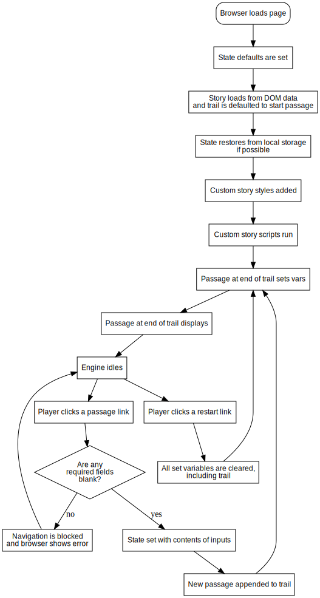

This is a guide to the Chapbook story format for Twine 2.1 Story formats control how a story created with the Twine editor plays in a Web browser; once you select the Play button in Twine or publish your story to a file, whatever story format you have selected takes over.
Chapbook is designed to be easy to work with as an author and generate output that is a pleasure to read by players. It provides sensible default behaviors for your story that can be customized to fit your particular needs.
This guide does not assume you have any programming knowledge; however, it doesn't hurt to know CSS or JavaScript, as it uses both technologies heavily. It's split into several chapters that will gently guide you through the process of story creation.
This guide does assume, however, that you're familiar with the Twine 2 editor itself. If you're new to Twine, the Twine 2 guide is an excellent place to start. There are also numerous tutorials on the web that can be helpful.
Licensing
Chapbook is released under the MIT license. Broadly speaking, it can be used to create free and commercial works alike without royalty payment of any kind. Mentioning Chapbook and Twine in the credits of your work isn't required, but it is appreciated.
Because Chapbook is open source, its ongoing development and maintenance is supported by Patreon supporters like:
- Adia Alderson
- Albert Gyulgazyan
- Aly Albansky
- Anastasia Salter
- Andrew Smith
- Antonio Garcia
- Ben McKenzie
- Ben Sawyer
- Brendan Hennessy
- Caelyn Sandel
- Cathie LeBlanc
- Chris Martens
- Clive Henrick
- Dan Q
- Dan Steward
- David Ball
- Duane Johnson
- Emily Short
- Ian
- Jim Graziano
- Joe Nobody
- John Boyland
- John Chapman
- John McDaid
- Jonathan Huston
- José Dias
- JRUndercover
- Laura Gibbs
- Leanne Taylor-Giles
- Luc Schurgers
- Matt Campbell
- Molly Jameson
- Richard Holeton
- Robot Parking
- Soliriok
- Stephen Sun
- Stephen Wardle
- Stuart Moulthrop
- Thandle2
- Tim Thompson
- Tom
- Venceremos
Supporters at particular tiers receive access to devlogs and other rewards. If you use Chapbook, please consider supporting the project on Patreon.
Browser Support
Chapbook supports the defaults set of web browsers set by the browserslist project. You can view what that entails in detail on browserl.ist.
How to Use Chapbook
Chapbook is bundled as part of the Twine 2 editor now, though releases of Twine sometimes lag behind Chapbook. If you would like to use it separately, or update by hand, choose the Formats button from the story list page you see when you first start up Twine, then the Add a New Format tab at the top of the dialog that appears. Paste the following address into the field and select the Go button:
https://klembot.github.io/chapbook/use/1.2.0/format.js
Once you do that, you must set the story you're working with to publish using Chapbook. Edit one of your stories, then choose Change Story Format from the story menu at the bottom of the editor. Choose Chapbook here. Once you do, selecting the Play button or publishing your story to a file will use Chapbook format.
To use the micro version of Chapbook, which removes all debugging-related code, add this address instead:
https://klembot.github.io/chapbook/use/1.2.0-micro/format.js
Why To Use Chapbook
There is a relative embarassment of riches when it comes to selecting a Twine 2 story format. What are Chapbook's advantages?
-
Chapbook source code is easy to read. It disallows certain practices, such as nesting conditional statements2, and enforces others, like placing all variable declarations in one place in a passage, that lead to easier-to-follow code.
-
Chapbook has built-in functionality for common authoring scenarios. From cycling links to delayed text, many things you'll want to do with your stories will only require a single line of code.
-
Chapbook has a backstage view that aids in testing; it allows you to inspect the state of play, change variables on the fly, and save state anywhere so that you can quickly debug a particular part of your story.
-
Chapbook is designed to be used on a variety of devices, especially mobile ones. It uses responsive design to adapt its page layout so that it's readable on any type of device without having to zoom in or scroll unnecessarily. It also is lightweight-- it currently contains 120K of code, which takes less than a second to load on cellular networks.
-
Chapbook's appearance can be customized without knowing HTML or CSS, and has built-in tools that allow you to preview style changes in your story immediately, so you can craft the appearance you're looking for without having to learn browser developer tools.
Why Not To Use Chapbook
-
Chapbook is young. This means that resources apart from this guide are scarce compared to the many tutorials you'll find related to the venerable formats SugarCube and Harlowe. And there will be fewer people to turn to if you have a question or encounter a problem.
-
You've invested significant time already in learning another story format. There's nothing that Chapbook can do that other formats can't. It may be easier to write with, depending on your point of view, but if you've already spent the time to learn how to write for another story format, it may not be worth the time investment.
An Aside on Names
There's been some debate as to whether Twine produces games or merely stories: the truth is, with Twine you can make games, you can make interactive stories, and you can also make things that nobody can quite pin down. Keeping in the spirit of vexing formalists who prefer clear boundaries, this guide calls the things you'll create with Chapbook stories and the people who you share them with players, but you shouldn't infer anything from this usage. Please make strange things with Twine and Chapbook.
Chapbook, sadly, cannot be used with Twine 1. 2: If you have programming experience, this idea may immediately cause some alarm--how can you possibly write anything serious without this functionality? Conditional Display discusses this subject, but it may be a bit hard to follow if you skip ahead immediately.
Acknowledgments
Chapbook is a confluence of ideas rather than one, wholly original one. Its vars sections are familiar territory to anyone who has used YAML front matter in a static site generator like Hexo. And much of its state-centered design--in opposition to an imperative design, where change occurs mostly through function calls--comes from what I've learned from Redux, the de facto standard library for managing state in the React ecosystem.
You may not be able to tell it by looking at the syntax, but the named hooks of Leon Arnott's Harlowe story format inspired many of the thoughts that Chapbook is based upon. What I found so appealing about named hooks is the idea of keeping code separate from the text it affects; that logic could be kept, if only at arm's length, separate from prose.
Chapbook's default aesthetics owe a lot to the style of the interactive fiction engine Undum, by Ian Millington, as well as Liza Daly's works Stone Harbor and Harmonia. I hope you find Chapbook's appearance half as graceful as these examples. Or if not--I hope I've left you enough hooks to customize it away into something better.
The notes feature of Chapbook's backstage view was inspired by Illume, which is an excellent way to review a Twine story before release.
If you take a look at the Twine Cookbook, you’ll see more than a few similarities between its table of contents and this guide's. This is no accident. One of my design goals with Chapbook was to make common use cases easy--and the Twine Cookbook has been a wonderful signpost as to what people wanted to achieve with Twine.
You might also notice some resemblance between this guide and the Inform Designer's Manual, written by Graham Nelson, which not only is one of my favorite works of technical writing, but is possibly the one document that's most responsible for my ongoing infatuation with interactive fiction.
Finally, I want to thank my creative partner Joel Haddock for patiently playing the roles of guinea pig and sounding board in equal measure.
Photos in this Guide
The photos found in this guide come from a combination of Pixabay and Unsplash, and are used under terms of the licenses on those web sites. The people who took these photos are:
- Angela Bedürftig
- Gregory Butler
- Lauren Fleishmann
- Free-Photos
- Tom Hermans
- Jason Leung
- Pexels
- Uriel Shuraki
- Rudy and Peter Skitterians
This section begins with an explanation of how to add text formatting, such as boldface or small caps, to text in your story, and create links between passages. Once you've finished it, you'll be able to create the digital equivalent of books like the Choose Your Own Adventure series.
Text Formatting
Of course, you can type paragraphs into a Twine passage in Chapbook and it will display them as you would expect. But for other kinds of formatting, such as bold or italics, Chapbook follows the syntax of a popular markup language called Markdown.
The term 'markup language' might sound complex, but in reality it's just a set of conventions of how to represent formatting in plain text. For example, to make part of your text italicized when displayed, you simply type asterisks around it, *like so*.
If you've never used Markdown before, try using the dingus as you read this section. It's an online playground with a funny name that not only allows you to quickly see how text will be rendered, but also has a cheatsheet that summarizes the different formatting available to you. Bear in mind, however, that Chapbook has a few extra formatting options available to you above and beyond the standard Markdown set.
Italics and Boldface
To italicize a a phrase, type * or _ (a single underscore)1 around it.
| Typed | Displayed |
|---|---|
_Unconventional_ tastes | Unconventional tastes |
*Unconventional* tastes | Unconventional tastes |
To make a phrase boldface, type ** or __ (two underscores) around it.
| Typed | Displayed |
|---|---|
__Unconventional__ tastes | Unconventional tastes |
**Unconventional** tastes | Unconventional tastes |
It doesn't matter whether you use asterisks or underscores, so long as you're consistent in a single usage, and you can mix and match them in your text.
| Typed | Displayed |
|---|---|
**"I'll _murder_ you,"** she hissed. | "I'll murder you," she hissed. |
Monospaced Type
To set text in a monospaced typeface, like this, type backticks (`) around it.
| Typed | Displayed |
|---|---|
`Beep boop,` HAL commented. | Beep boop, HAL commented. |
Small Caps
If you'd like to set some text in small caps, type ~~ (two tildes) around it.
| Typed | Displayed |
|---|---|
Above the door was a ~~NO TRESPASSING~~ sign. | Above the door was a NO TRESPASSING sign. |
This convention, though not a part of original recipe Markdown, conflicts with some other Markdown dialects, which use ~~ for struck-out text, like so. To do this, type <del> and </del> around your text:
| Typed | Displayed |
|---|---|
At the bottom of the page, nearly completely covered by the government censor's pen, was that same code name you had seen before: <del>S-5900</del>. | At the bottom of the page, nearly completely covered by the government censor's pen, was that same code name you had seen before: |
Line Breaks
If you'd like to insert a single line break, leave two spaces at the end of a line, or put a backslash (\) at the end of a line.
| Typed | Displayed |
|---|---|
After the final no there comes a yes \And on that yes the future world depends. | After the final no there comes a yes And on that yes the future world depends. |
Section Breaks
A convention sometimes used in publishing to indicate a new scene, or a new line of thought is to separate the text using a series of asterisks, like this:
It had been a long day, and I fell asleep nearly instantly.
* * *
The following morning was no better than the day before.
To add a section break to your text, type *** (three asterisks) on a line by itself.
Lists
To created a bulleted list (or, in the parlance of the web, an unordered list), type *, -, or + at the beginning of a new line. It doesn't matter which character you use, but you do need to be consistent in each list.
| Typed | Displayed |
|---|---|
* Red* Green* Blue |
|
To create a numbered list (also known as an ordered list), start each line either with a number and a period, or just a #. The numbering you use doesn't actually matter--you can have two items starting with 2. and the list will still be numbered correctly.
| Typed | Displayed |
|---|---|
# Red# Green# Blue |
|
1. Red2. Green3. Blue |
|
Why bother to specially format a numbered list? Just like in word processors, using this format will cause each item to be nicely indented, so that the second line of text of each item appears to the right of the initial number.
Ignoring Formatting Characters
Occasionally you'll want to use Markdown formatting characters as-is, without them initiating formatting. The simplest way to do this is to put a \ (backslash) in front of them.
| Typed | Displayed |
|---|---|
\*\* PLEASE EXIT NOW \*\* | ** PLEASE EXIT NOW ** |
Other Custom Styling
You can also enter HTML into a passage without any extra code surrounding it. It will be displayed exactly as you type it in. The library that Chapbook uses to render Markdown is sometimes inconsistent about how it treats HTML, however. It will always let HTML tags pass through as-is, but whether it interprets the contents of these tags as Markdown or HTML can depend on the exact situation. Unfortunately, the best way to test this is to experiment.
Blockquotes Don't Behave As You Might Expect
Chapbook formatting differs from standard Markdown in how it displays blockquotes--that is, a long stretch of text, often multiple paragraphs, that is indented to indicate it isn't part of the main text. Markdown uses > at the start of a line to indicate this. However, Chapbook uses the > to mark text as part of a fork instead. If you'd like to display a block quotation, put <blockquote> and </blockquote> around it.
| Typed | Displayed |
|---|---|
<blockquote>Call me Ishmael. Some years ago--never mind how long precisely--having little or no money in my purse, and nothing particular to interest me on shore, I thought I would sail about a little and see the watery part of the world.</blockquote> | Call me Ishmael. Some years ago--never mind how long precisely--having little or no money in my purse, and nothing particular to interest me on shore, I thought I would sail about a little and see the watery part of the world. |
Underscores as italics have a tangled history behind them; they resemble underlines, which were more-or-less invented as a workaround for typewriters being unable to italicize words.
Simple Links
At the heart of every Twine story are links. Chapbook follows the Twine conventions for typing links, which is to say, it steals shamelessly from the syntax used by wikis everywhere.
The simplest link notation surrounds a name of a passage with double square brackets: [[A tiny door]]. This displays the title of the passage directly in the text.
Sometimes it makes sense to obscure the name of the destination in the text--perhaps because your passage is named A Grisly End, or the title of the passage is capitalized but you'd like to link it in the middle of a sentence. You can do this in two different, but equivalent ways.
| Typed | Displayed |
|---|---|
You [[open the door->A Grisly End]] with great confidence. | You open the door with great confidence. |
The [[Miss Scarlet<-young lady]] seated in the chaise seems inexplicably guilty to you. | The young lady seated in the chaise seems inexplicably guilty to you. |
(The links don't lead anywhere in the examples above, of course.)
The easiest way to remember this is to think of the arrow pointing to the passage you're linking to. It doesn't matter which direction the arrow points; use the syntax that feels most comfortable to you.
You cannot use Markdown or other formatting characters inside a simple link. If you'd like to italicize a certain link, for example, put the formatting around the link instead, i.e. _[[a friend of a friend]]_. See Link Inserts for how to create a link that has formatting inside it, like a man with particular skills.
External Links
To link to another web page, enter a URL instead of a passage name. You can use any link syntax you'd like, though the arrow syntax makes your text more readable in most cases:
| Typed | Displayed |
|---|---|
You [[open Twine->https://twinery.org]] on your computer. | You open Twine on your computer. |
Older Link Syntax
Chapbook also supports the link syntax from Twine 1 that used a vertical bar (or pipe character):
| Typed | Displayed |
|---|---|
You [[open the door|A Grisly End]] with great confidence.
| You open the door with great confidence. |
This is harder to remember than the arrow syntax, so there's little reason to use it now unless you learned it from Twine 1.
Forks
It's a staple of interactive fiction to show a set of possible choices together, often at the end of a passage. The Choose Your Own Adventure series of books would have text like this at the bottom of a page:
If you decide to walk along the beach, turn to page 5.
If you decide to climb the rocky hill, turn to page 6.
We don't need to specify page numbers when working in a digital format, of course, but it can still be nice to set off these choices from the rest of the text. Chapbook calls these bundles of links forks, and they are signalled by placing each link on separate line, with > at its beginning:
> [[Walk along the beach]]
> [[Climb the rocky hall]]
Forks display light lines between the links and horizontally center the text of the links. See Fork Style to learn how to change this.
Ways to Link
The concept of a hyperlink doesn't bear explaining, does it? Can you remember how many hyperlinks you followed to reach this guide after you opened your web browser? We take hyperlinks for granted because they are such a fundamental part of the web, and yet, we're still collectively figuring out all of their uses.
Hypertext is still such a young medium that although the world mostly agrees that there exists categories of links, there isn't yet a consensus on what these categories are, let alone what they should be called.
So, some food for thought.
-
Standard Patterns in Choice-Based Games analyzes Choose Your Own Adventure books and their descendants and identifies some common ways they branched.
-
Patterns of Hypertext does something similar, but instead uses the literary hypertexts of the 1990s as its sources.
-
Fun da mentals: Rhetorical Devices for Electronic Literature suggests some exercises to try to broaden your perspective on linking.
Introducing Backstage
When you launch your story from Twine using the Test button in the editor toolbar, Chapbook enables its backstage view: a panel that sits beside your story and allows you to peek into its workings and tinker with them while you interact with it as players will. This section discusses the History and Notes tabs in the backstage view. The other tabs, State and Style, are discussed later in this guide in State Backstage and Page Style respectively.
If you would like to temporarily hide the backstage view, use the arrow button to its left, which toggles the view's visibility.
{% hint %} While testing your story in Twine, it's best to use the Test button instead of Play. If you use the Play button instead, Chapbook will try to resume play where you last left off. Usually, you'd like to start from the beginning, which Chapbook does in test mode. {% endhint %}
The History Tab
As you visit passages in your story, the History tab will show them in a tabular list, with the oldest at the top and the most recent at the bottom.
You may see some additional rows next to each passage name. These are explained in State Backstage, but for now you can ignore them.
Use the ↳ button beside an entry in the table to rewind the story to that passage.
The Notes Tab
This tab can be used to record notes on the passage you're currently viewing--noting misspellings, or any other thoughts you'd like to record. These notes are stored separately from the story itself, so that if you are collaborating with other people on a story, each of you can keep separate notes. The notes you enter are saved automatically as you type.
You can export notes you've entered using the Export Notes button, and import them into someone else's browser using the Import Notes button. If any notes already exist for a passage, the notes you import will appear below what was previously entered. If you'd like to reset your notes, use the Delete All Notes button.
This section introduces the two ways Chapbook allows you to create more elaborate in your passages, modifiers and inserts. If you are familiar with macros in other story formats, they work in a similar kind of way.
Modifiers and Text Alignment
One thing not mentioned in the previous section is how you would center text, or even right-align it. Alignment was never part of the original version of Markdown, and so various dialects of Markdown use their own notation for it.1
Chapbook uses a general-purpose notation called a modifier to apply special handling to blocks of text. Modifiers are always single lines that begin and end with square brackets2, like so:
Above the cave mouth, someone has carved:
[align center]
_Lasciate ogne speranza, voi ch'intrate_
The text [align center] is never shown to the player. Instead, Chapbook centers the text following it. As you might have guessed, you can also write [align right] and [align left].
The continue modifier
Modifiers apply to all the text that follow them, until either the end of the passage or another modifier appears in the source text. To cancel all active modifiers, use [continue] like so:
Above the cave mouth, someone has carved:
[align center]
_Lasciate ogne speranza, voi ch'intrate_
[continue]
You feel a little less confident in your plan.
[continue] simply cancels all active modifiers. You can abbreviate it as [cont'd] or [cont].
Vertical text alignment
If you'd like to change how text is aligned vertically inside the page container, see the Page Style section.
Twine 2's default format, Harlowe, for instance, uses punctuation like =><= on the preceding line to indicate centered text, while other Markdown dialects put arrows around centered text, like ->SALE TODAY<-.
2: If you'd like to show players a line of text with brackets in it, enter a single backslash (\) at the start of the line. Chapbook will display the text as-is without the backslash you entered.
Delayed Text
You can also use a modifier to cause part of the text of a passage to appear after a delay. If you've never seen this effect before, take a look at the introduction to Stephen Granade's Will Not Let Me Go. The sentences fade in and out, leaving you with a single word, "remember." Although that story wasn't built with Chapbook, you can use Chapbook's delayed text functionality to achieve the same effect.
Here's an example of this modifier in action:
You settle in for the long transatlantic flight.
[after 1 second]
You remember suddenly that you left the stove on at home.
The text [after 1s] is never shown to the player. Instead, Chapbook displays You remember suddenly that you left the stove on at home. after the previous text has been onscreen for one second.
You can put any measurement of time you want in the after modifier1, and you can abbreviate the units of time. The below are all valid:
[after 300 milliseconds]
[after 300ms]
[after 1 minute]
The after modifier only allows round numbers. Instead of writing 1.5 seconds, you must write 1 second 500 milliseconds, or shorter: 1s500ms or 1500ms.
Advice on Using after
The after modifier should be used sparingly, and the delays should be specified keeping in mind that everyone reads a different pace. One minute may not seem very long, but it's an eternity for fast players.
Chapbook signals that more text will be coming by displaying an animated watch in the lower-right corner of the page, and impatient players can click the mouse or press a key to skip over the delay. This functionality cannot be disabled.
Modifiers Normally Create Paragraphs
Modifiers normally cause the text that follows them to be in a separate paragraph from the text before it. There are cases, though, where you want text to appear with the preceding paragraph instead. The append modifier makes this happen.
You've solved the mystery at last.
[after 500ms; append]
But then it hits you: why _did_ Mrs. Peacock have a lead pipe in her purse?
The semicolon allows you to join multiple modifiers together in a single line. It's equivalent to:
[after 500ms]
[append]
But then it hits you: why _did_ Mrs. Peacock have a lead pipe in her purse?
It doesn't matter which order you put append, and unlike after, you enter it by itself, without any extra explanation.
Including, fiendishly, days, months, and years. Chapbook uses a library called timestring to parse these delays. Its documentation lists out all of the possibilities.
Notes
You may want to enter text in your story as a note to yourself as you work--for example, to note that a passage needs some revision, clarify how players could reach a passage, or just remind yourself where to pick up in your next editing session.
To do this, use the [note] modifier.
It was a dark and stormy night.
[note]
I really need a better beginning.
When Chapbook displays the passage, it will only show It was a dark and stormy night. You can write [note to myself] or [n.b.]1 instead of [note]. You can also write [fixme] and [todo], which come from the programming world. They work identically to [note], but you can easily do a search in the Twine editor for these terms to make sure you've addressed everything before a release. [todo] is useful for noting things yet to be implemented, while [fixme] is useful for problems you've noticed, but haven't yet had time to fix.
You can, of course, use more than one note in a passage, and mix them with regular text:
It was a dark and stormy night.
[note]
I really need a better beginning.
[todo]
Maybe have the screen flash?
[continue]
And you felt quite depressed.
These notes are stored separately from what is entered in the Notes backstage tab, unfortunately.
{% hint style="danger" %} Unlike backstage comments, notes are still visible to anyone who knows how to use their web browser's development tools. Don't put anything you need to keep secret in a note. {% endhint %}
Short for nota bene, which is a fancy way to write pay attention to this.
Link Inserts
Sometimes you'd like to link to a passage, but don't know its name exactly. Take the passage below:
You walk a bit down the alleyway. The scent of the black trash bags simmering in the summer heat is overpowering--terrible in three separate yet indescribable ways--so you [[retreat for now]].
All well and good, except that alleyways often have two entrances. If a player could reach this passage two different ways, how can you make sure they return to the right place? You can use an insert to do this. Inserts are special instructions in passage text that are framed with curly brackets, {like this}, and are interpreted instead of displayed verbatim. They're called inserts because they instruct Chapbook to insert something into the text for you. In this case, we want Chapbook to insert a link to whatever passage the player was looking at before they reached this one.
In this case, we'd write:
You walk a bit down the alleyway. The scent of the black trash bags simmering in the summer heat is overpowering--terrible in three separate yet indescribable ways--so you {back link, label: 'retreat for now'}.
Inserts follow this format:
{ insert name : value , parameter name : value , parameter name : value }
- The insert name signals what type of insert this is, i.e.
back link. - Parameter names signal more specific descriptions of how the insert should
appear or behave, i.e.
label. Each kind of insert accepts different parameter names. Parameter names, unlike values, never have quotation marks around them. An insert can have any number of parameters, including none. Two are shown in the example above to demonstrate that they are divided by commas. - Values are where you specify the behavior of the insert. If a parameter
value is text--like the words
'retreat for now'--they must have either single or double quotation marks around them, so that Chapbook knows where the beginning and end of the text is. There's no difference in how single or double quotation marks are handled; it's just convenient to write{back link, label: 'Exclaim, "Well, I never!"'}.1 Any other types of values, such as numbers, must not have quotation marks around them.
An insert must have its contents all on one line--no line breaks with the Enter or Return key are permitted.
Everything in the example above is optional except the insert name. Different inserts use different variations of this usage--for instance, the back link insert does not use a value following the insert name:
{ back link , label : 'retreat for now' }
You can also leave off the label property and just write {back link}: in this case, Chapbook will assume you'd like it to use the word 'Back' as the link label.
If Chapbook is unable to understand the contents of an insert, it displays it as-is. This is so that you can otherwise use curly brackets in your text.
{% hint style='danger' %} You cannot nest inserts inside each other. {% endhint %}
Restarting the Story
There's another insert very similar to {back link} that's named {restart link}. Instead of going to a previous passage, it takes the player back to the very beginning of the story. You could of course link back to the first passage by name, but for now, consider this a handy shortcut. {restart link} also resets other aspects of Chapbook's operation, as you'll learn in Continuity Between Sessions.
As with {back link}, {restart link} allows you to specify a label:
{restart link, label: 'Oh forget it all'}
If you write {restart link} by itself, Chapbook will use the label 'Restart'.
Manual Links
You can also insert a link using the insert {link to}. Below are some examples:
You decide after entirely too much deliberation to download {link to: 'https://mozilla.org/firefox', label: 'Firefox'}.
You notice that there is a {link to: 'narrow alleyway'} off to one side.
A {link to: 'Bryan Mills', label: 'A man with *certain* skills'} is just who's needed.
The third example demonstrates one use of manual link inserts: although they are more verbose than simple links, they do allow you to enter Markdown formatting into the link label. Passage links also have other uses; see The Vars Section for how you can change the destination of a link dynamically.
Cycling Links
Chapbook has an insert for cycling links--that is, links that do not move the player anywhere, but change their label. See Menus and Cycling Links for more information.
If you need to use a single or double quote inside a text value set off with the same punctuation mark, put a backslash (\) in front of it, like so: {back link, label: '"I couldn\'t possibly comment," he replied.'}
Reveal Links
A link can also reveal more text in your passage instead of displaying an entirely different one. Liza Daly uses this effect in Stone Harbor (a story she created using another authoring system called Windrift) to give the story a novelistic feel.
Chapbook calls these reveal links, and they can either display more text or the contents of an entire passage.
To display more text, write:
I was driving home late one night when {reveal link: 'something odd occurred', text: 'I saw five deer staring at me from one side of the road, all in a line'}.
This will first display "I was driving home late one night when something odd occurred," and then when the player selected "something odd occurred," it will change to "I was driving home late one night when I saw five deer staring at me from one side of the road, all in a line."
The text you enter in either part of the insert will be interpreted as source code, so you can use formatting to further customize its appearance.
Revealing text works well for short substitutions, but writing long stretches of text can be awkward. In these instances, try revealing a passage:
I was driving home late one night when {reveal link: 'something odd occurred', passage: 'A Dangerous Incident'}.
This will work the same way as the previous example, only it will show the contents of the passage named 'A Dangerous Incident'.
{% hint style='info' %} A passage shown by a reveal link will not be recorded in a session's history. {% endhint %}
When using a reveal link with a passage containing multiple paragraphs, Chapbook inserts the paragraphs in such a way that the surrounding text's order is maintained.
For example, if you have a passage named 'Shopping List':
Apples
Bananas
Carrots
and then a passage with this:
I went to buy {reveal link: 'groceries', passage: 'Shopping List'}. It was a rainy day.
The player will see this after they click the link:
I went to buy Apples
Bananas
Carrots. It was a rainy day.
Notice how the period after the link insert is moved to the end, after Carrots, but not on a line by itself, and the rest of the paragraph continues.
Embedding Passages
A common need in branching narrative is for divergent paths to merge together. The easiest way to make this happen is for the two passages to link to the same one, but you can also create a less obvious stitch in your story by embedding one passage inside another.
For example, imagine that the main character takes either a plane or train on the way to a passage named "L.A.":
You spend a few hours watching the clouds drift below the wings of the plane before arriving in [[L.A.]]
The cross-country train ride leaves plenty of space for contemplation on the way to [[L.A.]]
You could instead merge the passages directly, using the {embed passage} insert:
You spend a few hours watching the clouds drift below the wings of the plane.
{embed passage: 'L.A.'}
The cross-country train ride leaves plenty of space for contemplation.
{embed passage: 'L.A.'}
The two passages will show the contents of the "L.A." passage below their text. Apart from the passage name, the embed passage insert does not accept any other parameters.
Remember that like any insert, {embed passage} can be placed at any point in the text of a passage. It can be sandwiched between text in a passage, or even repeatedly used.
In this section, you'll learn how to add state to your stories, which allows you to track more information about a playthrough of your story than just what links the player followed.
What is State?
You can create a compelling story with just the techniques outlined in the previous section. The Choose Your Own Adventure book series that has been part of Western pop culture since it exploded in popularity in the 1980s did just that. Turning to a particular page in the book is the equivalent of following a link in a digital medium, of course.
But in the wake of CYOA's popularity came another wave of interactive books written by people familiar with tabletop role-playing games like Dungeons & Dragons.1 They thought the format could be adapted to provide similar experiences to a live RPG session, but without the trouble of having to round up three or four other people to play with. They began to incorporate the trappings of RPGs--in particular, the character sheet.
If you've never seen a character sheet, they resemble a spreadsheet, but instead of a household budget or a corporate profit and loss statement, they describe a character numerically. A very smart D&D character has an intelligence of 17, but an average strength of 7. A character might start with 20 hit points, but after taking a nasty fall into a mountain crevasse only have 8 left.
With character sheets came the concept of state: that is, two readers could reach the same page of a gamebook, but one could be doing very well for themselves, but the other on death's door. The essential quality of state is that it varies between sessions; hence, it contains variables. Variables may be independent (strength and intelligence) or dependent (a weakened character, for example, may be able to carry less weight than usual).
The other popular use of state has been to record whether an event has happened and enable or disable links based on that. The Sherlock Holmes Solo Mysteries series, for example, asks the reader to check Clue A or Clue Q on their character sheet after making a discovery, and then later only allow the protagonist to solve the mystery if they had uncovered all the necessary clues along the way.
Later, the Storyspace hypertext system would incorporate the concept of state with its guard fields. Similar to checking off clues, stories created with Storyspace can choose to show certain links only to players who satisfy the conditions of their guard fields.
The Choice of Games series uses a system well-suited to long narratives that its designers named fairmath. Fairmath averages variable changes so that each time a variable increases or decreases, it does so at a diminishing rate. The effect is similar to the experience-point system of D&D , where it takes increasingly longer for a skill to improve as a character becomes better at it--although fairmath allows a variable to both increase and decrease, D&D players almost always simply accumulate experience points.
Although state in hypertext may have its roots in the number crunching of RPGs, there's no reason it needs to be so clinical or reductionist.2 Tom McHenry's Horse Master shows a player numerous variables about their horse, including Uncanny and Realness, but it never explains their purpose directly. Porpentine's Begscape uses precious few variables--most apparent to the player are coins and health--but uses them cruelly.
Is State Separate From The Player's Path?
From a certain point of view, though, isn't state simply a side effect of the choices the player makes? That is--do we really need to record anything but what links the player followed? If the outcome of a story hinges on whether the player found Clue M, then surely all we really need to track is what passages they visited. There's no need for this extra bookkeeping.
There are two reasons to record state separately: first, for convenience's sake. It's tedious to type out the code equivalent of "if the player has visited this passage but not this other one" or "if the player has visited any one of these four passages" repeatedly. Secondly, a story might incorporate elements of randomness, such that multiple playthroughs following the same links may yield different results.3
You Are The Hero, a retrospective of the Fighting Fantasy book series, offers an intriguing peek into the history of one of these RPG-influenced gamebook series. And if you've never tried the genre, Project Aon hosts nearly all of the works of Joe Dever, who was perhaps the most prolific RPG gamebook author, in a format that can be played in a web browser for free.
To pick apart just one thing in the D&D paradigm: there are many different types of intelligence, and the concept of assigning numeric scores to intelligence in people has a dark history.
For more on incorporating randomness into your story, see Randomness.
The Vars Section
The primary way that Chapbook allows you to work with state is through vars (short for variables) sections. These sections always come at the beginning of a passage and are separated from normal text by two dashes (--).
To carry forward the example from the previous section, here's how a desperately stereotypical dungeon crawl's first passage might look:
strength: 18
dexterity: 7
constitution: 14
intelligence: 9
wisdom: 8
charisma: 11
--
After a lusty evening in the village tavern, you set off down the trail to
the nearest dungeon. It's a bright, sunny day, and you're happy to have a
clear destination in mind.
When the player visits this passage, Chapbook will add six variables to the story's state: strength, dexterity, constitution, and so on, and sets them to the numbers listed.
Vars sections never display anything to the player; this is so that, for example, you can set a variable named doomedToDieInFiveMinutes and the player will be none the wiser unless you wish it.
{% hint style='info' %}
If a passage is embedded in another using the {embed passage} modifier, its vars section will also take effect.
{% endhint %}
You may only have one vars section in each passage, but then there's really only ever need for one. The name of state variables must follow a few rules, too. They must start with a letter (upper or lowercase), underscore (_), or dollar sign ($); after the first character can come any combination of the preceding kinds of characters as well as digits.1
Sadly, you can't use spaces in your variable names. Because of this, a common practice called camel casing (because of the camel-like humps in the resulting word) glues phrases together using capital letters, like the doomedToDieInFiveMinutes example above. Another school of thought, snake casing, prefers to use underscores instead; e.g. doomed_to_die_in_five_minutes. Either's perfectly fine. Use whichever feels most comfortable to you.
Another common practice is to put an underscore in front of variable names when the value will only be used in the current passage. This practice is just a hint to yourself; Chapbook does not enforce this usage.2
{% hint style='info' %}
A variable name can contain periods (.), but they carry a special meaning. Until you've read Objects and Lookup Values, it's best to leave them out of variable names.
{% endhint %}
{% hint style='danger' %} Chapbook and web browsers reserve certain variable names for their own use. If you try to use a variable whose name overlaps them, unpredictable things may happen, so you should avoid them. Chapbook reserves the following names:
browserenginenowpassagerandomstory
The browser reserves quite a few (over two hundred at time of writing), but you're unlikely to want to use most of them, like ondeviceorientation. See the exhaustive list for more details.
{% endhint %}
The only time variable names are shown to a player is if an error occurs in your story while they are playing it, so choose names that are easy to remember and descriptive. There's no need for a clueF variable when you can have sawFootprintsInVault instead.
Variables Have Types
The example at the start of this section assigned numbers to variables, but variables can hold other types of values.
Strings are collections of letters, numbers, spaces, and other symbols. Strings are surrounded by either apostrophes (') or quotation marks (") so that's it clear where they begin and end, in the same way that is used for textual parameter values. You can use either punctuation mark to mark off a string's beginning and end, but just like Markdown italics and bold, you have to be consistent with each usage. If you need to use a delimiter character inside a string, type a backslash (\) in front of it, e.g. 'Don\'t, just don\'t.'.
Strings are great for storing names for things. For example, if you want to allow the player to set the name of the main character at the start of a story, a string would be the best type of variable to use. You can also use strings to store fuzzy kinds of values. You could record the state of a relationship between two characters as 'friendly', 'neutral', 'wary', or 'hostile'.
Booleans simply record a true or false value. Like numbers, you don't need to put anything around a boolean to signal what it is; just type true or false. Booleans are good for recording whether something has occurred in a story; for example, whether the main character has found a clue.
There are other, more complex types of values that will be discussed later, but numbers, strings, and booleans will get you quite far. To review, here's an example of a passage whose vars section contains all three types of variables.
dollarsInPocket: 12
openedPortalToAlternateDimension: true
name: 'James'
--
You've nearly reached the end of your adventure.
Variables Can Be Calculated
You don't have to set variables to plain values--meaning, a vars section could look like this when the main character finds a dollar lying on the ground:
dollarsInPocket: dollarsInPocket + 1
This vars section increases the dollarsInPocket variable by 1 using an expression. You can think of an expression as a formula or calculation. It's anything that can be transformed into a single value via the evaluation process. For example, you can use the basic mathematical operations--addition, subtraction, multiplication, and division--with numeric variables. You can also use addition to connect two strings together--for instance, fullName: first + ' ' + last--but you cannot use any other mathematical operators with strings.
You can also compare two numbers or strings, yielding a boolean.
-
===, "equal to"
True if both sides are the same number or string. Strings have to be exactly the same:'DOE'does not equal'doe', nor does'doe '(note the trailing space) equal'doe'. -
!==, "not equal to"
True if both sides aren't the same. -
>, "greater than," and>=, "greater than or equal to"
True if the left side is larger than the right side. If you use>=, then this is also true when the two sides are equal. -
<, "less than," and<=, "less than or equal to"
True if the left side is smaller than the right side. If you use<=, then this is also true when the two sides are equal.
Generally speaking, one string is considered larger than another if it would come after it in alphabetical order. For example, 'b' > 'a'. But these comparisons can be confusing and unintuitive. Is '+' greater than '&'? It in fact is, but would you know at a glance? It might surprise you to learn than 'A' < 'a'.3 So it is usually best not to use greater-than or less-than operators with strings.
Below is an example vars section that demonstrates how these can be used.
correct: guess === 3
nighttime: hour >= 18
--
The quizmaster leans back in his chair and grins.
Boolean variables have their own separate set of operators.
-
!, "not"
Changes a true value to false and vice versa. -
&&, "and"
True only if both sides are true. -
||, "or"
True if one or both sides are true.
{% hint style='danger' %} You cannot use inserts or modifiers in vars sections. They only work inside the displayed text of your passage. {% endhint %}
Clarifying Expressions With Parentheses
Often expressions are complex. For example, in a simple role-playing scenario, you might decide a character armed with a hammer does strength * 2 + 4 damage. But if strength is 12, does that mean that the expression evaluates to 28 (multiply 12 by 2, then add 4) or 72 (add 2 to 4, then multiply by 12)?
You may remember from algebra class that mathematical operators have rules relating to precedence; specifically, multiplication occurs before addition. But you probably have never been taught what the rules are for boolean logic--e.g. what does !true || false evaluate to?4--and even if you do know the rules, it can be tricky to correctly apply them in a complex expression.
In these situations, you can use parentheses to help make an expression easy to follow, or even to override the normal order of operations. (strength * 2) + 4 makes it clear how the expression will be evaluated--and if indeed you wanted the answer above to be 72, you can specify that by writing strength * (2 + 4).
Evaluation Only Happens Once
An important thing to remember about setting a variable to an expression is that the evaluation only happens once, when you set the variable. Imagine this scenario:
- In a passage, you set the variable
teethChatteringtotemperature < 0. - In a later passage, the protagonist moves inside and sets
temperature: temperature + 20.
The variables are now inconsistent: teethChattering is true but temperature is above 0. The best way to avoid this problem is to avoid making a variable completely derived from another. You don't need a separate variable named teethChattering if all it does is reflect whether temperature is greater than 0. A better use would be setting hasACold: temperature < 0 && !wearingJacket, to reflect that the protagonist caught a cold by being outside without a jacket. They may subsequently go inside or put on a jacket, but obviously neither change will affect the fact that the protagonist hasACold.
Expressions Can Be Used in Inserts
An expression can be used in place of a value in an insert. For example, the passage below:
target: 'another passage'
--
{embed passage: target}
Will display the contents of the passage named 'another passage'. Remember that this usage differs from placing a variable name in quotation marks, which Chapbook treats as a string. That is, this passage:
target: 'another passage'
--
{embed passage: 'target'}
Shows the contents of the passage named 'target' instead. This can be confusing, of course. The simplest rule to keep in mind is that quotation marks, either single or double, always go around strings. If you don't see quotation marks around something, it will be evaluated.
As the heading advertises, inserts can use entire expressions, not just variables, as values. For instance:
petType: 'cat'
activity: 'Walk'
--
{embed passage: petType + activity}
Will display the contents of the passage 'catWalk'.
You can use non-Latin characters in variable names, such as sabiduría or мудрость, but bear in mind that older web browsers that do not fully support the Unicode standard--in practice, old versions of Internet Explorer that have miniscule usage rates nowadays--may be deeply confused by them.
2: The SugarCube story format popularized this practice, and in fact does discard variables whose name starts with an underscore after the player navigates to another passage.
3: The final authority on ordering characters in a string is the Unicode standard. Characters are compared by their Unicode code points; a higher numeric code point means that a character is greater than another.
4: In case you're curious, !true || false evaluates to false. The not operator takes precedent over the or.
Displaying Variables
Of course, setting variables isn't very useful by itself. They need to affect the course of a story somehow. The simplest way they can do this is simply being inserted into the story. You can display the contents of a variable using an insert.
The passage source below:
name: 'Chris'
--
"Hi, {name}," your guide greets you.
Will display as: "Hi, Chris," your guide greets you. This example is a little silly, since you could just as easily write Chris where namename
Variable inserts do not allow any parameters, as introduced in Link Inserts; the name of the variable acts as the insert name.1
You Cannot Put Expressions In An Insert
The following will not display as you might expect:
cash: 3
--
"Sorry, but I decided that I want {cash + 2} dollars for it," the salesman replies.
Expressions like this are not allowed in variable inserts-- you may only enter the name of a variable. It's simple enough to accomplish this with a temporary variable:
cash: 3
_unreasonablePrice: cash + 3
--
"Sorry, but I decided that I want {_unreasonablePrice} for it," the salesman replies.
You can always distinguish a variable insert from another type of insert by looking for spaces inside it. {back link} could never be a variable insert because back link contains spaces, and thus could never be the name of a variable.
Conditional Display
The other common use of variables in stories is to block off access to a branch, or conversely unlock a hidden part of a story. In order to do this with Chapbook, you'll need to combine a variable with a modifier.
For instance, let's say you have a passage where the protagonist finds a key hidden in the weeds:
hasKey: true
--
It's the strangest thing: there, in the weeds that surround the base of the tree, is a single rusted key.
After picking it up, you decide to [[move on]].
Then later in the story, when the protagonist encounters the door the key belongs to:
At the end of the hall, you find a featureless steel door.
[if hasKey]
You could try [[unlocking it]] with the key you found.
[continue]
You consider [[turning back]].
Only if the player had found the key earlier do they see "You could try unlocking it with the key you found," but in all cases they see "You consider turning back." The if modifier only displays the text below it if the expression in the modifier evaluates to true. You can enter anything that eventually evaluates to a boolean1. Some more examples:
[if stringVariable === 'red'][if dollarsInPocket > 5][if 2 + 2 === 4]
Unless Conditions
In certain cases, it's more expressive to use an unless instead of an if.
[unless tookAntidote]
You've run out of time. Your breath catches in your throat; your body slips from the chair, and the world turns dark.
unless modifiers work exactly the same as if ones, only they display the text following them if their condition evaluates to false.
Else Conditions
The wording of the first example in this section is a bit awkward. We could make it flow better using an else modifier:
[if hasKey]
You could try [[unlocking it]] with the the key you found, or just [[turn back]].
[else]
Nothing to do here but [[turn back]].
else modifiers display the text following them if the previous if did not display. They have no relationship with unless conditions. elses also only apply on a per-passage basis; if you use an if in one passage, you cannot place the matching else in a different passage. If you find yourself wanting to do something along these lines, instead repeat the same condition in the second passage and use an unless instead of an if.
Modifiers (Including Conditional Ones) Cannot Be Nested
It is not possible to directly nest conditional modifiers in Chapbook. Meaning:
[if hasKey]
You could [[open the door]]...
[if monsterDistance < 2]
... and it might be your best chance for survival.
Would, if hasKey is false and monsterDistance is 1, only display:
... and it might be your best chance for survival.
This is because modifiers only affect the text directly following them. They do not affect modifiers before or after them in the text, or any other text. You should instead write:
[if hasKey]
You could [[open the door]]...
[if hasKey && monsterDistance < 2]
... and it might be your best chance for survival.
Let's take a more complicated example:
- The player must have first found a certain secret door by looking.
- Once found, the door can only be unlocked with a key they previously found.
- Once unlocked, the door remains open.
This might be written in the popular SugarCube story format as:
<<if $doorFound>>
<<if $doorUnlocked>>
The door stands open and unlocked, ready for you to [[enter it]].
<<else>>
You've found a door here, <<if $hasKey>>ready to be [[unlocked]]<<else>>but you haven't found a key yet that will open it.
<</if>>
<<else>>
There seems to be nothing of note here, but perhaps [[a search would turn up something]].
<</if>>
(This example omits, for brevity's sake, the other passages where $doorFound and $hasKey would be set.)
In Chapbook, you could instead use temporary variables to simplify some of the logic of the passage, and write:
_doorOpen: doorFound && doorUnlocked
_doorLocked: doorFound && !doorUnlocked
--
[if _doorOpen]
The door stands open and unlocked, ready for you to [[enter it]].
[if _doorLocked]
You've found a door here,
[if _doorLocked && hasKey; append]
ready to be [[unlocked]].
[if _doorLocked && !hasKey; append]
but you haven't found a key yet that will open it.
[if !doorFound]
There seems to be nothing of note here, but perhaps [[a search would turn up something]].
Remember that doorFound, doorUnlocked, and hasKey are set in other passages. And beware--you cannot use an [else] in front of but you haven't found a key yet that will open it. The else will display in all cases that the [if] does not, even when doorFound is false.
An alternate method is to move parts of your logic to a separate passage and [embed it][embed-passage]:
_doorOpen: doorFound && doorUnlocked
_doorLocked: doorFound && !doorUnlocked
--
[if doorFound && doorUnlocked]
The door stands open and unlocked, ready for you to [[enter it]].
[if doorFound && !doorUnlocked]
{embed passage: 'locked door logic'}
[if !doorFound]
There seems to be nothing of note here, but perhaps [[a search would turn up something]].
Which approach is best to take depends on the situation. It's not a good idea to embed passages more than one level deep.
Disabling Conditions For Testing
It can be useful to override a conditional modifier so that it always or never displays, regardless of circumstances. To do this, change [if] to either [ifalways] or [ifnever].
[ifnever 1 + 1 === 2]
This would have been shown with a regular [if], but isn't.
This affects any [else] modifiers that follow it.
Truthfully, it is also possible to write [if stringVariable] or [if 2 + 2]. In these cases, any non-empty string (e.g. not '') is treated as true, and any non-zero number is treated as true. It's best to be explicit, however, and write [if stringVariable !== ''] and [if 2 + 2 !== 0].
[embed-passage]: ../text-and-links/embedding-passages.html
Conditions and Variables
You cannot use inserts or modifiers in the vars section of a passage, so you cannot write something like:
[if cousins > 10]
largeFamily: true
--
You sit back in your chair and consider everyone you'll need to invite to the reunion.
Instead, there are two ways you can assign a variable a value based on a condition. First, you can assign a variable to the result of a comparison, either true or false:
largeFamily: cousins > 10
--
You sit back in your chair and consider everyone you'll need to invite to the reunion.
This passage sets the variable largeFamily to either true or false, depending on what value the variable cousins has. However, you may want to set variables to other types of values besides booleans. To do this, add a condition to the assignment:
transportation: 'car'
transportation (kilometers > 1000): 'plane'
--
You'll need to take a {transportation} to get there.
This example demonstrates two new things about vars sections:
- You may change a variable more than once in a single vars section. Chapbook changes the variables in the order they are written, top to bottom.
- If you write an expression inside parentheses before the colon (
:) that tells Chapbook what value to set, that particular line will only take effect if the expression evaluates totrue.
So first transportation is set to 'car', and then, if kilometers is greater than 1000, the value of transportation is immediately changed to 'plane'. Chapbook runs through each variable assignment in sequence, doing nothing else in between, so the two assignments effectively work as one.
Here's a more complex example showing how multiple assignments and conditions go hand in hand.
language: 'an unknown language'
language (country === 'Brazil'): 'Portuguese'
language (country === 'China'): 'Mandarin'
language (country === 'Ethiopia'): 'Amharic'
language (country === 'Russia'): 'Russian'
language (country === 'Australia' || country === 'United States'): 'English'
--
The official language of {country} is {language}.
Although Chapbook sets variables in the order you write them, often times it won't matter much, as you'll usually want to write conditions that are mutually exclusive of each other--that is, only one line ever takes effect.
Truthfully, it is also possible to write [if stringVariable] or [if 2 + 2]. In these cases, any non-empty string (e.g. not '') is treated as true, and any non-zero number is treated as true. It's best to be explicit, however, and write [if stringVariable !== ''] and [if 2 + 2 !== 0].
[embed-passage]: ../text-and-links/embedding-passages.html
Continuity Between Sessions
Chapbook is designed so that players don't need to manually save their progress, as is often typical in digital games. Instead, it silently saves the state of play every time the player navigates to a new passage.
This is partly by necessity and partly by design. It's necessary to continually save progress because browsers, especially those on mobile devices, are extremely stingy with resources. If a player begins your story but decides to check social media in another browser tab and then gets lost in a series of adorable cat pictures, the browser may decide to put your story's tab into the equivalent of hibernation. When the player returns to your story, the browser essentially reloads the story1, which causes any unsaved progress to be lost. Thus, progress needs to be continually saved.
It also discourages a habit in players that is nicknamed [save scumming], where players constantly save and reload their progress in an effort to find what they believe is the most optimal outcome.
Chapbook saves state by using a feature of web browsers called local storage. If you are familiar with browser cookies, local storage works similarly to them, though local storage allows for storing much more data than a cookie. You don't need to know what either technology is to use Chapbook successfully, but it is important to understand two things:
-
A player's state is saved only to their device, and to the browser they are using. If a player starts out using Microsoft Edge but changes halfway to Mozilla Firefox, they'll start from the very beginning of your story in Firefox. Their progress in Edge isn't lost, of course. Likewise if they begin on their phone and switch to a laptop halfway through, they will start from the beginning.
-
If a player clears their browsing history, they'll lose their progress in your story.
Because state is retained across sessions, you must use the [{restart link} insert][restart-insert] in order to start the story fresh once you begin using state in your stories. If you only link back to the first passage, variables will remain in the state they were at the end of play--which is likely to produce weird results.
{% hint style='working' %} Additional functionality related to saving progress, such as being able to share saved states between browsers or devices, or allowing players on a device the ability to have more than one save, may come in a future version of Chapbook. {% endhint %}
In fact, you'll often see a loading indicator briefly when this occurs, instead of the page reappearing instantly. [save scumming]: http://tvtropes.org/pmwiki/pmwiki.php/Main/SaveScumming [restart-insert]: ../text-and-links/link-inserts.html#restarting-the-story
State Backstage
State can be very slippery to work with, as it's not normally directly visible in your story--you can only infer from its side effects. Chapbook provides tools to track and even change state as you test your story.
The State Tab
Under the State tab, you'll find a Variables heading. This shows the current state of your story as you play. You can also select a value on the right side of the variables table and enter a new one--press the Return or Enter key when you're done to set the variable. You may only enter values in the variables table, not expressions.
If the Show Defaults checkbox is ticked, Chapbook will show various built-in variables--mainly related to Chapbook's configuration. See Customization for more details.
State Snaphots
Beneath the variables table is the Snapshots heading. Snapshots allow you to quickly save and restore the state of your story at any point. For example, if you'd like to skip the prologue or test a specific scene, play through your story as usual. When you've reached the point you'd like to skip to, use the Add Snapshot button. After giving your snapshot a name, it will appear under the Snapshots heading as a button. Using this button will immediately set the state of your story, including the passage you were viewing, to what it was.
Use the × button at the end of a snapshot button to remove it. Snapshots are saved to your web browser only.
{% hint style='working' %} Exporting snapshots for use by other people working on your story may come in a future version of Chapbook. {% endhint %}
State in History
The History tab also shows changes to state as you navigate through a story. If a passage changes a variable, you'll see a separate row in the history table showing that change. This is informational only--you cannot change variables from the History tab.
Objects and Lookup Variables
In addition to variables you create, Chapbook also maintains a number of built-in variables called lookups. Unlike regular variables, lookups cannot be changed by you. Instead, they correspond to properties in the environment--the current date and time when the player is interacting with your story, for example, or even the story itself.
Introducing Objects
In order to leave as many variable names available to you as possible, Chapbook groups its built-in lookup variables together using objects. An objects are another type of variable--like a string, boolean, or number--that acts as a container for other variables. Unlike simple variable types like strings or numbers, objects don't have values unto themselves. They only contain other variables.
To access a variable inside an object container, enter the object's name, then a period (.), then the variable. For instance, story.name accesses the variable named name inside of story.
You can nest objects as much as you'd like, and you can also write something like this in the vars section of a passage:
my.favorite.variable: 'red'
Chapbook will create each object variable (e.g. my and favorite) for you if it doesn't already exist.
Built-In Lookup Variables
Below is a list of lookups that Chapbook maintains for you:
| Variable Name | Description | Example |
|---|---|---|
browser.height | The height of the browser window in pixels. | 768 |
browser.online | Whether the browser currently has a network connection. | true |
browser.width | The width of the browser window in pixels. | 1024 |
engine.version | The version of Chapbook currently running, as a string. | '1.0.0' |
now.datestamp | A short human-readable description of the date right now. | '2/15/2011' |
now.day | The current day of the month, 1-31. | 15 |
now.hour | The hour of the time right now, where midnight is 0 and 11:00 PM is 23. | 18 |
now.minute | The minute of the time right now, 0-59. | 15 |
now.month | The current month, 1-12. | 2 |
now.monthName | The name of the current month. | 'February' |
now.second | The second of the time right now, 0-59. | 45 |
now.timestamp | A short human-readable description of the time right now. | '6:18:15 PM' |
now.weekday | The current day of the week, where Sunday is 1, Wednesday is 4, and Saturday is 7. | 3 |
now.weekdayName | The name of the current day of the week. | 'Tuesday' |
now.year | The current four-digit year. | 2011 |
passage.name | The name of the current passage as set in the Twine editor. | 'Untitled Passage' |
passage.visits | The number of times the player has seen the current passage, including the current time. That is, the first time the player sees a passage, this lookup's value is 1. | 1 |
story.name | The name of the story as set in the Twine editor. | 'Untitled Story' |
Note that now lookup values reflect when they were last accessed, which is usually when a passage is navigated to. String values like now.monthName will vary by the language the player has set as default in their browser-- a French person will see Août where an American sees August, for example, and similarly the French will see now.datestamp as '15/2/2011' where Americans see it as '2/15/2011'.
Randomness
Randomness is a powerful tool for creating interactive experiences. It can assist with simulation--to decide whether actions of a character succeed, as in tabletop role-playing games--but it can also be used for aesthetic purposes, from altering phrasings in text to creating an entirely randomized narrative.
The main way to make use of randomness with Chapbook is through lookup variables in the random object. For instance:
[if random.coinFlip]
Heads!
[else]
Tails!
... will display "Heads!" half of the time the story is played and "Tails!" the other half. The value of random.coinFlip potentially changes every time its value is used.1
For more fine-grained randomness, you can use lookup variables such as random.d100, which is a random whole number between 1 to 100. The full list is:
| Lookup | Range |
|---|---|
random.fraction | 0-1 |
random.d4 | 1-4 |
random.d5 | 1-5 |
random.d6 | 1-6 |
random.d8 | 1-8 |
random.d10 | 1-10 |
random.d12 | 1-12 |
random.d20 | 1-20 |
random.d25 | 1-25 |
random.d50 | 1-50 |
random.d100 | 1-100 |
All of the lookups listed above are always whole numbers, except random.fraction, which is a decimal between 0 and 1.
One easy mistake that can be made with these lookup variables is to forget that their values change every time they are used. For instance:
[if random.d4 === 1]
One.
[if random.d4 === 2]
Two.
[if random.d4 === 3]
Three.
[if random.d4 === 4]
Four.
The passage above may show just one paragraph, but it's also possible for it to show more than one, or even none at all. Because random.d4 changes value, the end result could look like this:
[if 4 === 1]
One.
[if 2 === 2]
Two.
[if 1 === 3]
Three.
[if 4 === 4]
Four.
... which would display:
Two.
Four.
If you'd like to re-use a specific random value, the easiest thing to do is to assign it to a variable like so:2
_chosen: random.d4
--
[if _chosen === 1]
One.
[if _chosen === 2]
Two.
[if _chosen === 3]
Three.
[if _chosen === 4]
Four.
Chapbook Is Pseudorandom
Chapbook's randomness is not truly random: in fact, the process by which it generates random numbers is entirely predictable. This may sound ludicrous, but this is how almost all computer-generated random numbers work. Chapbook uses what is called a pseudorandom number generator, which generates a stream of apparently random numbers based on a seed value.
The pseudorandom number generator will always generate the same values when using a particular seed value. Unless otherwise specified, Chapbook will use a seed value based on the date and time that a playthrough first begins, so each session will see different pseudorandom values. Chapbook stores this seed value in config.random.seed. This variable can be both read and written to.
Why would you want to change the pseudorandom seed, though? It can help with testing--for example, if someone reports a problem with your story, you can set your seed value to theirs and be able to replay things exactly as they experienced them. You can also set a seed value manually in a version of your story you give to others to test, so that you can ensure everyone has a consistent experience.
Which is to say it is possible, as demonstrated in Rosencrantz and Guildenstern Are Dead, that random.coinFlip holds the same value after it is read.
2: This example uses an underscore in its variable name to signal a temporary variable, but remember that this is merely a convention.
This section covers adding images, audio, and video to your stories.
Publishing Models
Twine 2 does not currently permit embedding images, audio, or video--assets, for short--in your story files. This is so that your story loads quickly and efficiently. Twine 1 permitted this by encoding them using a technique called Base64, which converts binary data into text that can be safely embedded into HTML. This has two disadvantages:
- Base64 adds a 33% overhead to file sizes, causing stories to load significantly slower than they could otherwise.
- A story couldn't begin to be played until all its assets had completely downloaded. This can be troublesome if a story uses many images, but this would be disastrous for audio and video, where files are ten times as large.
In Twine 2, any multimedia assets must exist separately from the published story file itself. There are two approaches you can take. Either one is equally viable--it depends on your situation.
Self-Contained Publishing
In this approach, you publish assets used by your story in the same place as the published story file itself. A typical arrangement is shown below:
- Story.html
- Assets
- Images
- Photo 1.jpeg
- Photo 2.jpeg
- Audio
- Intro Song.mp3
- Images
One advantage of the self-contained approach is that your work can be easily packaged into an archive file, usually in ZIP format, and made available on digital marketplaces. In this scenario, a player can download your story once, unpack it, and begin playing without having to have an active Internet connection.
A self-contained story can be published to a web site, so that players don't have to go to the extra step of downloading the archive file and expanding it, but you should be aware of the bandwidth the site will use. Bandwidth is a measurement of how much data is transferred to and from a web site. If you publish a story with an audio file that is 1 MB in size (about a minute long) that 1,000 people play, the site will consume 1 GB of bandwidth.
Some web site hosting providers promise unlimited bandwidth at a flat fee, but throttle connections if a site uses too much bandwidth; others will temporarily shut a site down that uses too much bandwidth. Others will keep your site available at full speed no matter how much bandwidth you consume, but charge you a variable--sometimes steep--amount of money depending on how much bandwidth it consumes.
All of which is to say: if you plan to post a self-contained story to a web site, you should understand the constraints of the hosting provider you use.
Another disadvantage to self-contained publishing is that Twine 2 doesn't currently have many tools to help you while you are creating your story. In order for assets to display correctly, you'll have to publish your story to the same folder as your assets. Testing your story inside Twine 2 will not display the assets correctly.
When you add assets to a self-contained story, you'll use a relative URL. You've encountered URLs before; they appear at the top of a web browser window, and indicate the location at which a resource is stored. They typically begin with http:// or https://. Relative URLs, however, locate a resource in relation to your published story file. In the diagram above, the relative URL for the intro song is Assets/Audio/Intro Song.mp3. A relative URL does not start with any preamble; instead, each directory beneath the story file's directory is separated by a forward slash (/), with the file name of the asset given last. If you link to an asset in the same directory as the published story file, the filename of the asset works as a relative URL.
Cloud Publishing
In this approach, you publish your assets to an existing service like Flickr or YouTube. Your story file can be downloaded or posted to a web site, but your assets will load from these external sites. As such, players will need to have an active Internet connection as they play.
Cloud publishing means you won't have to worry about bandwidth, but in exchange most services place some kind of watermark or other identifying information on your asset so that it's clear that you're using their service. Hosting services also have terms of service that may place restrictions on what kind of content you post.
Cloud publishing also allows you to test stories inside Twine 2 without having to publish your story to a file. To do this, you'll sometimes use an embed code to incorporate your assets into your story, which is a fragment of HTML source code provided by the service you use.
If you choose to use assets in the cloud, it's important that you ensure that you are legally able to do so. It is tempting to hotlink resources--that is, embed assets from another server without permission. This is bad form at minimum, as you are potentially incurring bandwidth costs for the site owner (as noted in Self-Contained Publishing Above above), but if a site owner finds out you've done this, they can remove the assets you've linked to or replace them with something obnoxious or embarrassing.
Images
Embedding Your Own Images
To display an image in a passage, use the {embed image} insert:
For all you know, not a single person has entered this cave in a thousand years. The cave entrance is covered in moss and leaves.
{embed image: 'cave.jpeg', alt: 'Cave entrance'}
The alt property is explained below under "Alternate Text."
Embedding Images from Flickr
Flickr is a venerable photography service that allows people to mark their uploaded photos as embeddable. If a photo can be embedded, you will see an icon that looks a bit like an arrow in the lower right of the photo. Selecting that option will display the embed code to use, which is rather lengthy. Make sure to use the code found in the Embed tab, not the Share or BBCode ones. Once you have the code, use the {embed Flickr image} insert as below.
The night sky is alive:
{embed Flickr image: '<a data-flickr-embed="true" href="https://www.flickr.com/photos/kees-scherer/43929816675/in/photolist-29VVN1k-MxBBfR-Mxmaoa-2abPdAf-28uxzXE-MsR1ev-MqbA18-P2bWEY-29LvwHZ-P1DPQ7-2b3znq5-28jiA4E-2b4qGd6-29QQrVa-2a4C5X3-MhDEFV-2b3tVwa-MfPdhz-2aZTken-2aTGEx1-2aVbrLg-NLVUU7-289o89h-288U1wq-2aN6BuN-NH87Jm-2aQH3Ta-NDwgPd-NB3Mym-2aHjvXP-29jgSN2-29zFLg5-27TFbQw-Nw3iLs-2aD2Dfn-27SXWGo-29f84mZ-LRdL8r-2aVtHgk-2awe7hj-29ux7nq-LPVrYk-2avhxQJ-2azf7ct-2ayX3mM-2aygKz8-27Nwi91-27NmmvS-NqvSME-2axAzDV" title="The Andromeda Galaxy, Messier 31"><img src="https://farm2.staticflickr.com/1857/43929816675_07357e53b0_m.jpg" width="240" height="185" alt="The Andromeda Galaxy, Messier 31"></a><script async src="//embedr.flickr.com/assets/client-code.js" charset="utf-8"></script>', alt: 'the Andromeda galaxy'}
{% hint style='danger' %} Just because Flickr allows you to embed an image does not mean you have the right to use it in your story freely. Check the image's page for the license the photo's uploader is using. Some may not be allowed to be used in commercial projects, while others may not allow usage at all. {% endhint %}
Embedding Images from Unsplash
Unsplash is a stock photography service that hosts photos that can embedded into a story royalty-free. To use an image from Unsplash, combine the {embed Unsplash image} insert with the image's URL on unsplash.com. No embed code is required.
{embed Unsplash image: 'https://unsplash.com/photos/Na0BbqKbfAo', alt: 'the moon'}
What a horrible night to have to study for exams.
{% hint style='working' %} Other types of image embeds may come in a future version of Chapbook, as well as more flexibility in layout--e.g. having an image appear to the left or right of the text. {% endhint %}
Alternate Text
Regardless of where your image comes from, you must give it alternate text. This is so that players who have a visual disability are able to have an equivalent experience to those who don't. WebAIM has an excellent in-depth treatment of alternative text, but the gist is that it should contain a brief description of what the image depicts, that would work well for someone reading your story out loud. Because, for players with a visual disability, they often in fact will have your story read out loud by screen reader software.
When writing alternate text, avoid phrases like "image of Abraham Lincoln" or "Boston Harbor photo"-- just write "Abraham Lincoln" or "Boston Harbor."
If your image is purely decorative--say, a fancy border--then it should have empty alternative text, so that screen readers will skip over it: This doesn't mean omitting alt entirely, but setting it to an empty string, as below.
{embed image: 'asterisk.jpeg', alt:''}
Although several browsers, Safari most prominent among them, hide the full URL from you unless uo specifically ask for it.
Audio
Chapbook supports two types of audio: ambient sound and sound effects. Ambient sounds are long-running audio, such as music or background noise, that automatically loop when playback completes. Sound effects are one-off sounds, like the sound of a door opening or an explosion.
There are two other differences between sound effects and ambient audio:
- There can only be one ambient sound playing at a time under normal circumstances.
- Sound effects are preloaded when your story begins. This is so that when you ask for an effect to be played in your story, there will be as little delay as possible before it begins playback. However, this means that you should be careful about the file size of the sound effects you use. The preloading process takes place in the background as players interact with your story, so large sound effects will not delay the start of your story. But it's still wasteful to load large files.
You should also make sure that all your sounds are in MP3 format. There are other types of audio formats, such as Ogg Theora or WAV, but browser support varies for each of these. MP3 is as universal a format as possible. There are many applications, including the open-source Audacity, that can convert audio files into MP3 format for you.
Sound Effects
Before playing a sound effect, you must first define it in your story state. Below is an example of how you would define a sound effect:
sound.effect.explosion.url: 'boom.mp3'
sound.effect.explosion.description: 'a large explosion'
--
The timer reads 0:00...
The explosion keyword defines the name of the ambient sound, which you'll use later. The url property defines the address to load the sound from, and the description provides a textual description of the contents of the sound. This is so that players who have difficulty hearing, or who have muted your story, can receive an alternate version of the sound.
Once you've defined your sound effect, you can play it in a passage using the {sound effect} insert.
sound.effect.explosion.url: 'boom.mp3'
sound.effect.explosion.description: 'a large explosion'
--
The timer reads 0:00...
{sound effect: 'explosion'}
The exact place you put the insert matters. If a player has disabled sound, or is unable to hear your sound, they will see the text of the description property instead where you enter the insert.
If you insert multiple different sound effects in a single passage, they will play simultaneously. If you insert a sound effect in another passage the player reaches while the effect is stil playing, the second insert will have no effect.
If you need to play a sound effect repeatedly, define it multiple times. You can assign the entire object to save time. For example:
sound.effect.explosion.url: 'boom.mp3'
sound.effect.explosion.description: 'a large explosion'
sound.effect.explosion2: sound.effect.explosion
--
The timer reads 0:00...
{sound effect: 'explosion'}
[[Oof.]]
(Note the lack of quotation marks around sound.effect.explosion in the line that sets sound.effect.explosion2.)
Assigning the sound.effect.explosion2 object wholesale, instead of setting it property-by-property, causes it to be a copy of sound.effect.explosion. If you ever change a property of sound.effect.explosion, sound.effect.explosion2 will change too.
And then, in the passage named Oof., you'd write:
That wasn't so bad. Wait...
{sound effect: 'explosion2'}
Ambient Sound
The process of defining an ambient sound is very similar to defining a sound effect.
sound.ambient.forest.url: 'forest.mp3'
sound.ambient.forest.description: 'midday forest sounds'
--
It's a beautiful day.
Similarly, you begin playing an ambient sound with an insert:
sound.ambient.forest.url: 'forest.mp3'
sound.ambient.forest.description: 'midday forest sounds'
--
{ambient sound: 'forest'}
It's a beautiful day.
The only difference here is that the sound will fade in, and if there was already an ambient sound playing, the two will crossfade. The exact length of the fade is determined by the state variable sound.transitionDuration. It is a string in the same format that the after modifier accepts.
To stop playing all ambient sound, write {no ambient sound}.
Controlling Sound Volume
To set the master sound volume for your story, change the state variable sound.volume to a decimal between 0 and 1. 0 is muted, and 1 is full volume. You can also temporarily mute all sound by setting sound.mute (note the lack of a D at the end) to true. The advantage of using sound.mute is that it allows you to toggle between no sound and a previously-set volume.
You can also set a sound's volume when playing it using an insert. Both of the inserts below begin playing a sound at half normal volume.
{sound effect: 'explosion', volume: 0.5}
{ambient sound: 'forest', volume: 0.5}
Browser Autoplay Problems
Chapbook makes every effort to resume sound playback between play sessions, so that if you begin playing an ambient sound, it resumes whenever the player comes back to your story. However, this runs afoul of strict restrictions most browsers have regarding sound that immediately plays when a web page is loaded. Some browsers have a blanket ban on this, while others take into account a player's behavior on the web site hosting your story--if a player has previously interacted a lot with the site, it may allow it, but the exact criteria for allowing it is often unclear.
Playing sound after a player has followed a link or otherwise clicked or tapped a link in your story should always work, whatever a browser's autoplay policy is.
Manually Controlling Sound
You may also manually play sounds, either sound effects or ambient sound, by setting their playing property to true. This property automatically becomes false once an effect finishes playing, but will never change for ambient sound unless you use an {ambient sound} insert or set its playing property to false again.
You can use this for more complex effects, such as layering ambient sounds; however, you must make sure to include appropriate descriptions for people who are unable to hear your audio. To do this, enclose the description inside <audio> and </audio> like so:
sound.ambient.forest.playing: true
sound.ambient.rain.playing: true
--
You walk outside.
<audio>Rainy forest background sound</audio>
The text inside the will not be displayed ordinarily.
Video
Embedding Your Own Video
{% hint style='working' %} Chapbook doesn't yet support embedding your own video, but it will. {% endhint %}
Embedding a YouTube Video
You've heard of YouTube, right? To embed a YouTube video, use its URL with the {embed YouTube video} insert:
Tell me if you've seen this one before.
{embed YouTube video: 'https://www.youtube.com/watch?v=9bZkp7q19f0'}
{% hint style='working' %} For now, it's not possible to have a YouTube video start when a passage displays. The player will need to begin playback. {% endhint %}
{% hint style='working' %} Accessibility features for video will be added to a future release of Chapbook. {% endhint %}
This section describes how to customize the appearance and behavior of your story in a web browser, including colors and font faces.
The Header and Footer
Normally, Chapbook displays your story's title and a link to restart it at the bottom of the page. This area, called the footer, can be changed to include additional information and links. You can also add information at the top of the page, in its header, in a similar manner. The Cloak of Darkness example, for instance, displays the current location in the header.
The header and footer are further divided into three areas: left, center, and right. You do not need to place content into each area--Chapbook does its best to evenly space your content regardless of which areas you use.
To change a header or footer area, set the corresponding variable in the config object.
config.header.left |
config.header.center |
config.header.right |
| main passage text | ||
config.footer.left |
config.footer.center |
config.footer.right |
Remember that you must set the object property to a string for it to function correctly--meaning, you must put single or double quotes around the value. For example:
config.header.center: "Midday"
The contents of the variable are interpreted the same way that passage text is, so you can use links, inserts, and, technically, modifiers in the variables:
config.header.right: "Money left: {money}"
config.footer.center: "[[Other stories in this anthology]]"
The header and footer are designed to display a single line of text, though, so modifiers are probably of limited use. The header and footer are updated every time a new passage is shown in the body of the page, so variable inserts like the one shown above will automatically update during play.
Fonts and Colors
The easiest way to customize your story's fonts and colors is with the Style backstage tab1, which sets values in the config.style object for you. As you make changes in that tab, your story's appearance will automatically update, so you can easily experiment to find a look that fits your story. However, changes you make will not be permanently saved-- the next time you test or play your story, it will revert back to its previous appearance.
In order to make changes in the Style tab permanent, you must copy the code in the Config panel at the top of the tab into your starting passage's vars section. (This passage is shown with a rocket-ship icon in Twine's story map.) Clicking anywhere in the box the code sits in will automatically select all of it to make copying and pasting easy.
Doing so will cause the appropriate variables to be set when your story first begins-- which doesn't mean that it has to be the only appearance your story takes on. You can change variables in the config.style object in a later passage's vars section and your story's appearance will change when the passage is visited. You could use this, for example, to denote a dream sequence or flashback.
The other panels in the Style tab, Page, Header, and Footer, all have the same fields. As you might guess, Page sets the base style of your story and Header and Footer govern the areas above and below the main text. By default, Chapbook stories don't have a header.
The values you set for page, header, and footer styles inherit from each other. That means that if a header or footer style value isn't set, it will use the corresponding page value instead. If a page value isn't set either, Chapbook's default style will be used instead.
Setting Text Style
{% hint style="info" %} Applies to:
config.style.page.fontconfig.style.page.link.fontconfig.style.page.link.active.fontconfig.style.page.header.fontconfig.style.page.header.link.fontconfig.style.page.header.link.active.font{% endhint %}
Chapbook uses a concise notation for specifying text style. Below is a simple example:
Palatino 18
This sets a Palatino typeface at 18 pixels tall.2 But in actual use, you ought to use something like this instead:
Palatino/serif 18
Slashes separate alternate typefaces in what is called a font stack. Before the advent of web fonts, font stacks were a crucial part of web design. At that time, web browsers were only capable of displaying fonts installed in the operating system, so designers had to specify alternate typefaces in order to create a consistent appearance across different operating systems.
In our current times, font stacks affect more what a page looks like at first glance--typically, text appears immediately in a system font, then in a web font after it finishes loading. (See [External Web Fonts][external-web-fonts.md] for details on how to use a web font with Chapbook.) But there are players who will have disabled web fonts, either out of personal preference or a need to save network bandwidth, and it's good practice to design your story to accommodate that.
The example above indicates that if a typeface named Palatino isn't available to the player's web browser, serif signals it should fall back to a generic serif font.3 If you'd like to set your story in Helvetica, you might use:
Helvetica/Arial/sans-serif 14
Many people viewing your story using a Windows computer won't have Helvetica available, but they almost certainly will have Arial, Microsoft's Helvetica competitor, and if for some reason they have neither, the story will use whatever sans serif font is available.
When specifying typefaces that have spaces in their name, you don't need to do anything special:
Times/Times New Roman/serif 20
You can also modify a font with the words bold, italic, underline or small caps. If you'd like to use multiple styles, just put spaces between them:
Palatino 18 bold italic
There is a special font style named regular, which removes any bold, italic, underline, or small-cap styling that the font would normally inherit. Font styles must be entered in all-lowercase. This is because you can omit parts of the declaration. All of the below are valid font notations:
Palatino18bold italicPalatino bold18 small caps
The omitted parts are inherited as described above.
Colors
{% hint style="info" %} Applies to:
config.style.backdropconfig.style.page.colorconfig.style.page.link.colorconfig.style.page.link.lineColorconfig.style.page.link.active.colorconfig.style.page.link.active.lineColorconfig.style.page.colorconfig.style.page.link.colorconfig.style.page.link.lineColorconfig.style.page.link.active.colorconfig.style.page.link.active.lineColor{% endhint %}
Although you don't have to use it, Chapbook has a built-in color palette called Open Color. It has a versatile range of hues that are designed to harmonize with each other.
Besides black and white, Open Color has 13 base hues:
To use them, enter the appropriate name. Open Color also offers 10 shades per hue:
As above, to use a particular shade, enter the name in its box, e.g. yellow-6. You can also use any other color notation that web browsers understand, from the traditional hex triplet notation (e.g. #0b7285) to more modern ones, such as hsla(0%, 65%, 48%, 0.75).
When setting colors in config, often you can specify both a background and foreground. For instance, you can set config.style.page.color to 'orange-9 on orange-0'. However, when specifying a border color, for instance config.style.page.link.lineColor, only the foreground is used.
As with fonts, you can omit parts of a color declaration. Setting config.style.page.link.color to 'on blue-4' causes links to use the page's foreground color, whatever it may be, but use a medium blue as background.
To review, launching your story with Twine's Test button will cause the backstage view to appear, including the Style tab.
If you are familiar with CSS units, you can also use them, e.g. Palatino 1rem or Palatino 25%.
What's a serif? Wikipedia aptly answers.
External Web Fonts
Creating a good font stack is difficult because there are very few typefaces you can count on a majority of your players having installed. Fortunately, you aren't limited to what your players happen to have installed--instead, you can use web fonts.
Using Google Fonts
Google provides a wide variety of freely-usable fonts through their Google Fonts service. To use Google Fonts in your story, first find the embed code for the families you wish to use:

Copy the embed code that Google Fonts offers you, i.e. <link href="https://fonts.googleapis.com/css?family=Open+Sans" rel="stylesheet"> , and set the variable config.style.googleFont to it in your first passage. You can then use the font name anywhere in the rest of config.style as usual:
config.style.googleFont: '<link href="https://fonts.googleapis.com/css?family=Open+Sans" rel="stylesheet">'
config.style.page.font: 'Open Sans/sans-serif 18'
--
Welcome aboard the U.S.S. Hood.
Note that because config.style.googleFont is a string, you must put single quotes around its value. (It's much easier to type single quotes here, since the embed code has double quotes in it.)
Using Adobe Typekit Fonts
Adobe Typekit serves a similar purpose to Google Fonts, but most of its collection requires an Adobe Creative Cloud subscription to use. That said, it does permit free use of some of its font families.
Once you've assembled a kit--Adobe's terminology for one or more font families you plan to use--find its embed code in Typekit.

Copy the default code, i.e. <link rel="stylesheet" href="https://use.typekit.net/abcdefgh.css">, and set the variable config.style.typekitFont to it in your first passage. As with Google Fonts, you can then use the font name anywhere in the rest of config.style.
config.style.typekitFont: '<link rel="stylesheet" href="https://use.typekit.net/abdefgh.css">'
config.style.page.font: 'Open Sans/sans-serif 18'
--
Welcome aboard the U.S.S. Hood.
Other Web Fonts
You can also use web fonts separately from a cloud service. Please make sure to check the license for the font; it's not uncommon, for example, to be required to pay a certain fee to use a font for personal use, but a different for use on the web, or in an app.
To include a font directly by URL, add two properties to config.style.fonts:
config.style.fonts.leagueSpartan.url: 'league-spartan.woff2'
config.style.fonts.leagueSpartan.name: 'League Spartan'
config.style.page.font: 'League Spartan/sans-serif 16'
--
It is the year 1969, and you are walking on the moon.
Chapbook can't infer the name of the font from the url property, so you must tell it what it is.
Page Style
On sufficiently wide web browser windows, Chapbook will add horizontal margins around the text of your story so that it's comfortable to read. The exact width of the text column is based upon the font size that's set in config.style.page.font. You can control the appearance around the text through several variables.
First, the variable config.style.page.style takes one of several possible values:
'none'creates no visible border around the page content'thin-line'and'thick-line'create flat borders around the content'shadow'adds a drop shadow around the content.
Chapbook's default appearance is 'shadow'.
If you use 'thin-line' or 'thick-line', you can specify the color of the line using the variable config.style.page.borderColor. This should be set to a single color.
The variable config.backdrop sets the color of the area around the text content. On smaller browser windows (especially mobile devices), this area is not visible, however.
When the story shows a new passage, it creates a transition between text based on what is set in the config.body.transition.name variable:
'crossfade'causes the old text to fade out at the same time that the new text fades in'fadeInOut'causes the old text to fade out, then the new text to fade in'none'causes the new text to replace the old text immediately
Chapbook's default transition is 'crossfade'.
If you use 'crossfade' or 'fadeInOut', you can control how long the transition takes by setting config.body.transition.duration, which should be a string in the same format that the after modifer accepts. Remember that it doesn't understand decimals, so if you'd like a transition to take half a second, set config.page.transition.duration to '500ms'. Also keep in mind that the duration is the duration of the complete transition-- a 'crossfade' and 'fadeInOut' transition with the same duration might look as though they last different amounts of time, as the 'fadeInOut' has two steps.
You can also set how the header and footer content update using the following variables. They take the same values as their body counterparts.
config.header.transition.nameconfig.header.transition.durationconfig.footer.transition.nameconfig.footer.transition.duration
Finally, Chapbook vertically centers text inside the page by default. To change this, set config.style.page.verticalAlign to either 'top', 'center', or 'bottom'.
Fork Style
The way forks display can be customized through several variables.
First, config.style.page.fork.divider.style sets the style of the dividing line between links. It can be set to any of these values:
dasheddotteddouble, which displays two thin horizontal linessolidnone, which hides the dividers completely
config.style.page.fork.divider.size sets the thickness of the dividing line, and config.style.page.fork.divider.color sets its color.
Design Considerations
Players will spend quite a lot of time with your story simply reading its text, so they deserve a well-considered experience. Which is not to say the experience should always be comfortable. Cara Ellison's Sacrilege has a searing purple background for its text and bright yellow links that turn green when you point at them, but all this is in service to its content. Sacrilege's story is, in part, about the sensory overload of a nightclub, so it's fitting that the text itself somewhat overload the player's senses.1
Fortunately, people have been designing reading experiences for centuries now, and there's quite a lot of accumulated wisdom on how to use type gracefully.
-
If you're new to typography, the best first port of call is Matthew Butterick's Practical Typography. Butterick is opinionated and a bit patrician in some of his pronouncements, but his basic ideas are sound, and he takes the Practical part of the name of his web site seriously.
-
The Yale Web Style Guide's chapter on typography is also worth reading, though it is intended for web designers and developers, who must build pages from the ground up.
-
If you find yourself truly intrigued by typography, it's worth tracking down a copy of The Elements of Typographical Style.
There is also a strange kind of science to selecting colors.
- If you've never delved into color theory, try starting with with the Color Schemes chapter of Rune Madsen's Programming Design Systems. It uses code examples using a programming language called Processing, but you can safely skim over them. If you find yourself intrigued by the subject, try the rest of Madsen's section on color.
- Khan Academy has a free online course on the science of color that talks about both how our eyes and brains perceive color, and the different color models used to represent color.
- There's no substitute for simply playing with color. The best tool online for this is perhaps Adobe Color CC, which is beginning to show its age but is still useful.
- WebAIM has a contrast checker that ensures that the color scheme you design has sufficient contrast for low-vision players. Your colors should pass the WCAG AAA criteria for normal text.
Try playing it, even for a little, then go back to the plain-jane white background of a typical web site. You'll see afterimages.
This section describes how to ask the player for input, including text fields, dropdown menus, and cycling links.
Text Input
Sometimes selecting a link isn't expressive enough to capture player intent. One common scenario is allowing the player to name a character--often, the protagonist. To do this, use the {text input} insert.
What would you like to name your loyal canine companion?
{text input for: 'dogName'}
[[Continue]]
This displays a text field after the first paragraph that, once the player moves to another passage, saves its contents to the variable named dogName. Take careful note of the quotation marks around 'dogName' in the insert. These are needed so that the variable name is passed as-is to the insert, instead of being evaluated. Consider this contrived passage:
petType: 'cat'
--
What would you like to name your loyal {petType} companion?
{text input for: petType}
[[Continue]]
This would save what the player entered to a variable named cat, not petType, because the variable petType is evaluated by the insert.
If the variable that the text input is saving to already has a value, the text input will start with that value already filled in. For example:
dogName: 'Lassie'
--
What would you like to name your loyal canine companion?
{text input for: 'dogName'}
[[Continue]]
Will suggest a default name of 'Lassie' for the player's dog.
Unless you specify otherwise, players must enter some text into a text input before moving onto another passage. If navigation is blocked, the player's web browser will show a message highlighting the text input that's empty. The exact appearance of this message varies from browser to browser, and can't be customized.
Optional Parts
To allow the player to skip entering anything into a text input, set the insert's required property to false.
What's your darkest secret? You don't have to tell me now if you don't want to.
{text input for: 'secret', required: false}
Note that as above, the variable name should be quoted, but false should not.
{% hint style='info' %} The restriction on navigation only applies to player-initiated navigation. A required text input will not block navigation initiated by the story itself, or the player choosing to restart the story. {% endhint %}
You also do not have to save a text input's value to a variable, if for some reason you won't need the value later. To do this, write {text input} or {text input, required: true}.
Dropdown Menus and Cycling Links
Instead of allowing any kind of input at all from a player, you may want to contrain them to a specific set of choices. Chapbook has two mechanisms for this that look different to the player, but behave identically behind the scenes: menus and cycling links.
In order to do this, we need to introduce a new type of variable, an array. An array is similar to an object1 in that it's a container for other variables. However, where objects contain named variables, arrays are simply an ordered list of values. This array lists the colors of the rainbow:
['red', 'orange', 'yellow', 'green', 'blue', 'indigo', 'violet']
Arrays are easy to spot: they simply put square brackets around a list of values separated by commas. An array can contain any type of value: ['red', 3, true] is a valid array. Arrays can also be empty, though in practice you'll rarely encounter this. The way to express an empty array is by writing [].
Dropdown Menus
The {dropdown menu} insert displays a menu of choices to the player.
What meal do you enjoy most?
{dropdown menu for: 'meal', choices: ['Breakfast', 'Lunch', 'Dinner']}
As with text inputs, {dropdown menu} inserts save the selected value to a variable--in the example above, a variable named meal. If meal were previously set to a value in the menu, that value will be automatically preselected for the player. Otherwise, the menu shows the first option you list in the array of choices.
Unlike a text input, a dropdown menu does not block navigation to another passage, since it always has some value set.
Cycling Links
The {cycling link} insert works exactly the same way as {dropdown menu}, only it shows a text link that the player selects to change. As the name implies, when the player reaches the last value in the choices array, the link starts over at the first element in the array.
I enjoy {cycling link for: 'meal', choices: ['Breakfast', 'Lunch', 'Dinner']} the most.
Optional Parts
Just like text inputs, dropdown menus and cycling links don't require that their value be saved to a variable. To do this, omit the for: part of the insert. For example, {cycling link, choices: ['Breakfast', 'Lunch', 'Dinner']}.
It is a peculiarity of JavaScript, the programming language of web browsers, that arrays are in fact implemented as objects, so in a sense arrays are objects. However, it's best to think of them at this stage as a distinct concept.
This section covers topics that require existing knowledge of Web technologies such as JavaScript and CSS. Learning these is more than this documentation can handle; the Mozilla Developer Network is one place to start if you're interested in learning.
Using JavaScript in Passages
As a last resort, Chapbook allows you to mix JavaScript into the text of your passage. To do this, use a [JavaScript] modifier:
[JavaScript]
document.title = 'A Sticky Pickle';
[continued]
"Oh dear," you think to yourself. "That stain will never come out."
The JavaScript modifier normally does not output anything in Chapbook; however, if you would like to output text, the modifier provides a function write()--just plain write(), not document.write()--that will output HTML source code. Text output via write() will be processed for links and Markdown.
Below is an example showing how write() works:
Before you lose your temper, you count to yourself:
[JavaScript]
for (let i = 1; i <= 10; i++) {
write(i + '... ');
}
You can refer to variables defined in vars sections as you would expect in JavaScript. Changing them in JavaScript will persist changes as you'd expect, as well.
color: 'red
--
[JavaScript]
write(`The sky is ${color}.`);
As a result, if you would like your JavaScript code to communicate back with the rest of your story, the easiest way to do this is to set the variable to an initial value in a vars section. If you absolutely need to create new variables in JavaScript, you can call engine.state.set() as below. This usage may change in future versions of Chapbook, though, whereas setting a variable initially in a vars section will always work.
[JavaScript]
let color = 'red';
engine.state.set('weather', 'sunny');
[continued]
It was a {weather} day. The sky was {color}.
This would display:
It was a sunny day. The sky was {color}.
{color} is displayed as-is because if Chapbook cannot find a matching insert or variable name, it displays the source text as it was entered. Any variables declared using let or const will not be visible to other Chapbook code, and will not be persisted across browser sessions.
Using CSS in Passages
Most of the time, the best way to customize the appearance of your story is to use Chapbook's built-in functionality or the Edit Stylesheet menu item in Twine. However, it is also possible to create passage-specific CSS using the [CSS] modifier.
[CSS]
.page article {
color: green;
}
[continued]
This text will be in green.
The CSS in this modifier will be applied globally--hence why the .page article selector is needed.
Adding Custom Inserts
Chapbook can be extended with custom inserts. Below is code that adds a {smiley face} insert that displays a 😀 emoji.
[JavaScript]
engine.extend('1.0.0', () => {
config.template.inserts = [{
match: /^smiley face$/i,
render: () => '😀'
}, ...config.template.inserts];
});
You can also place code like this into your story's JavaScript in Twine--this uses the [JavaScript] modifier for clarity.1
First, any extension of the Chapbook engine must be wrapped in a engine.extend() function call. The first argument is the minimum version of Chapbook required to make your insert work; this is so that if you share your customization, anyone plugging it into a Chapbook version it won't work in will receive a harmless warning, instead of the engine crashing with an error. Chapbook follows [semantic versioning] to assist with this.
The second argument to engine.extend() is the customization code you'd like to run. In this function, we add a new insert to config.template.inserts using [array spread syntax]. Every item in config.template.inserts must be an object with two properties:
match: a regular expression that the template engine will look for to render your insert. Leave out the curly braces; the template engine will take care of this for you. Inserts must always have at least one space in theirmatchproperty, so that they can never be mistaken for a variable insert.render: a function that returns a string for what should be displayed. The returned value will be eventually rendered as Markdown.
{% hint style='danger' %}
Do not mutate config.template.inserts directly, e.g. with config.template.inserts.push() or direct assignment. Doing so may cause incorrect behavior.
{% endhint %}
You may remember that inserts can take multiple parameters. Here's a more complex example that demonstrates this:
[JavaScript]
engine.extend('1.0.0', () => {
config.template.inserts = [{
match: /^icon of/i,
render(firstArg, props, invocation) {
let result = '';
if (firstArg.toLowerCase() === 'wizard') {
result = '🧙';
}
if (firstArg.toLowerCase() === 'vampire') {
result = '🧛';
}
switch (props.mood.toLowerCase()) {
case 'anger':
result += '💥';
break;
case 'love':
result += '❤️';
break;
}
return result;
}
}, ...config.template.inserts];
});
This has the following effect:
| Typed | Displayed |
|---|---|
{icon of: 'wizard'} | 🧙 |
{icon of: 'wizard', mood: 'anger'} | 🧙💥 |
{icon of: 'wizard', mood: 'love'} | 🧙❤️ |
{icon of: 'vampire'} | 🧛 |
{icon of: 'vampire', mood: 'anger'} | 🧛💥 |
{icon of: 'vampire', mood: 'love'} | 🧛❤️ |
First, notice that the match property doesn't try to match the entire insert; it just needs to be able to distinguish this insert from any other entered. Also, remember that the first part of the insert needed to be two words, icon of, to distinguish it from a variable insert.
Then, the render() property takes three new arguments, firstArg, props, and invocation. firstArg is the parameter given to the first part of the insert, and props is an object listing out all other parameters given in the insert. The names of properties are case-sensitive, so {icon of: 'wizard', Mood: 'anger'} would only display 🧙. The final argument, invocation, is the entire text of the insert exactly as it was typed, except for the surrounding curly braces. This is provided so that if neither firstArg or props is enough to achieve the effect you're looking for, you can look at invocation directly.
Below are some examples as to how these arguments work in practice.
| Typed | firstArg | props | invocation |
|---|---|---|---|
{smiley face} | null | {} | smiley face |
{smiley face: 'happy'} | 'happy' | {} | smiley face: 'happy' |
{smiley face, size: 'large'} | null | {size: 'large'} | smiley face, size: 'large' |
{smiley face: 'happy', size: 'large'} | 'happy' | {size: 'large'} | smiley face: 'happy', size: 'large' |
Word of warning--you cannot define an insert in the same passage that you use it in. [semantic versioning]: https://semver.org/ [array spread syntax]: https://developer.mozilla.org/en-US/docs/Web/JavaScript/Reference/Operators/Spread_syntax#Spread_in_array_literals
Adding Custom Modifiers
Chapbook can also be extended with custom modifiers. Below is code that adds a modifier that turns its text uppercase:
[JavaScript]
engine.extend('1.0.0', () => {
config.template.modifiers = [{
match: /^uppercase$/i,
process(output) {
output.text = output.text.toUpperCase();
}
}, ...config.template.modifiers];
});
You can also place code like this into your story's JavaScript in Twine--this uses the [JavaScript] modifier for clarity.1
See the first part of Adding Custom Inserts for an explanation of the engine.extend() function call, and how config.template.modifiers is changed. The match property works the same way as the match property for an insert; Chapbook compares possible modifier text with match properties until it finds a match.
The process() property is where the work of a modifier occurs. The output argument it is passed has three properties. Each one is Markdown source code, not HTML as it will be finally rendered.
text, the text that the modifier is being applied to.startsNewParagraph, a Boolean value indicating whether this block of text should begin a new paragraph. (The [append modifier], for example, sets this tofalse.)
Modifiers also receive two other arguments which the example above didn't show:
state, a private state object that is carried over invocations of a modifier in a single passageinvocation, the exact text that was typed in the modifier, without the square brackets surrounding it
Below is an example showing how state and invocation can be used to remove more and more letters from a passage.
[JavaScript]
engine.extend('1.0.0', () => {
config.template.modifiers = [{
match: /^(also\b)?remove\b/i,
process(output, state, invocation) {
const invokeLetters = invocation.replace(/^(also\b)?remove/, '').split('');
state.letters = (state.letters || []).concat(invokeLetter);
state.letters.forEach(letter => {
output.text = output.text.replace(new RegExp(letter, 'gi'), 'X');
});
}
}, ...config.template.modifiers];
});
So that the following passage (from Kurt Vonnegut's Slaughterhouse Five)...
[remove aeiou]
American planes, full of holes and wounded men and corpses took off backwards from an airfield in England. Over France a few German fighter planes flew at them backwards, sucked bullets and shell fragments from some of the planes and crewmen. They did the same for wrecked American bombers on the ground, and those planes flew up backwards to join the formation.
[also remove shrdlu]
The formation flew backwards over a German city that was in flames. The bombers opened their bomb bay doors, exerted a miraculous magnetism which shrunk the fires, gathered them into cylindrical steel containers, and lifted the containers into the bellies of the planes. The containers were stored neatly in racks. The Germans below had miraculous devices of their own, which were long steel tubes. They used them to suck more fragments from the crewmen and planes. But there were still a few wounded Americans, though, and some of the bombers were in bad repair. Over France, though, German fighters came up again, made everything and everybody as good as new.
[also remove t]
When the bombers got back to their base, the steel cylinders were taken from the racks and shipped back to the United States of America, where factories were operating night and day, dismantling the cylinders, separating the dangerous contents into minerals. Touchingly, it was mainly women who did this work. The minerals were then shipped to specialists in remote areas. It was their business to put them into the ground, to hide them cleverly, so they would never hurt anybody ever again.
... Would display as:
XmXrXcXn plXnXs, fXll Xf hXlXs Xnd wXXndXd mXn Xnd cXrpsXs tXXk Xff bXckwXrds frXm Xn XXrfXXld Xn XnglXnd. XvXr FrXncX X fXw GXrmXn fXghtXr plXnXs flXw Xt thXm bXckwXrds, sXckXd bXllXts Xnd shXll frXgmXnts frXm sXmX Xf thX plXnXs Xnd crXwmXn. ThXy dXd thX sXmX fXr wrXckXd XmXrXcXn bXmbXrs Xn thX grXXnd, Xnd thXsX plXnXs flXw Xp bXckwXrds tX jXXn thX fXrmXtXXn.
TXX fXXmXtXXn fXXw bXckwXXXX XvXX X GXXmXn cXty tXXt wXX Xn fXXmXX. TXX bXmbXXX XpXnXX tXXXX bXmb bXy XXXXX, XxXXtXX X mXXXcXXXXX mXgnXtXXm wXXcX XXXXnk tXX fXXXX, gXtXXXXX tXXm XntX cyXXnXXXcXX XtXXX cXntXXnXXX, XnX XXftXX tXX cXntXXnXXX XntX tXX bXXXXXX Xf tXX pXXnXX. TXX cXntXXnXXX wXXX XtXXXX nXXtXy Xn XXckX. TXX GXXmXnX bXXXw XXX mXXXcXXXXX XXvXcXX Xf tXXXX Xwn, wXXcX wXXX XXng XtXXX tXbXX. TXXy XXXX tXXm tX XXck mXXX fXXgmXntX fXXm tXX cXXwmXn XnX pXXnXX. BXt tXXXX wXXX XtXXX X fXw wXXnXXX XmXXXcXnX, tXXXgX, XnX XXmX Xf tXX bXmbXXX wXXX Xn bXX XXpXXX. XvXX FXXncX, tXXXgX, GXXmXn fXgXtXXX cXmX Xp XgXXn, mXXX XvXXytXXng XnX XvXXybXXy XX gXXX XX nXw.
WXXn XXX bXmbXXX gXX bXck XX XXXXX bXXX, XXX XXXXX cyXXnXXXX wXXX XXkXn fXXm XXX XXckX XnX XXXppXX bXck XX XXX XnXXXX XXXXXX Xf XmXXXcX, wXXXX fXcXXXXXX wXXX XpXXXXXng nXgXX XnX XXy, XXXmXnXXXng XXX cyXXnXXXX, XXpXXXXXng XXX XXngXXXXX cXnXXnXX XnXX mXnXXXXX. XXXcXXngXy, XX wXX mXXnXy wXmXn wXX XXX XXXX wXXk. XXX mXnXXXXX wXXX XXXn XXXppXX XX XpXcXXXXXXX Xn XXmXXX XXXXX. XX wXX XXXXX bXXXnXXX XX pXX XXXm XnXX XXX gXXXnX, XX XXXX XXXm cXXvXXXy, XX XXXy wXXXX nXvXX XXXX XnybXXy XvXX XgXXn.
Finally, in some cases, you may want a modifier to modify the source text as it was exactly entered by the author, before inserts and links are transformed into Markdown/HTML equivalents. To do this, write a processRaw() function instead of process. It takes the same exact arguments that process() does.
Word of warning--you cannot define a modifier in the same passage that you use it in. [append modifier]: ../modifiers-and-inserts/delayed-text.md
This section contains quick references to specific Chapbook topics.
Inserts
All of the below cause text or other types of content to appear in your passage. See Modifiers and Inserts for more information.
-
{ambient sound: 'sound name', volume: 0.5} -
Begins playing a previously-defined ambient sound.
volumecan be omitted; by default, the ambient sound is played at full volume. -
{back link, label: 'Back'} -
Renders a link to the previous passage.
labelcan be omitted; Chapbook will default to using 'Back'. -
{cycling link for 'variableName', choices: ['one', 'two', 'three']} -
Renders a cycling link that runs through the options listed in
choices, saving the option the player selected to the variable named.for 'variable name'can be omitted; Chapbook will not save the selected value anywhere. -
{dropdown menu for 'variableName', choices: ['one', 'two', 'three']} -
Renders a dropdown menu that runs through the options listed in
choices, saving the option the player selected to the variable named.for 'variable name'can be omitted; Chapbook will not save the selected value anywhere. -
{embed Flickr image: 'embed code', alt: 'alternate text'}
abbreviated:{embed Flickr: 'embed code', alt: 'alternate text'} -
Renders an image hosted on Flickr with alt text specified by
alt. -
{embed image: 'url', alt: 'alternate text'} -
Renders an image at a particular URL with alt text specified by
alt. -
{embed passage named: 'passage name'}
abbreviated:{embed passage: 'passage name'} - Renders the passage named in the insert. This executes any vars section in that passage.
-
{embed Unsplash image: 'URL', alt: 'alternate text'}
abbreviated:{embed Unsplash: 'URL', alt: 'alternate text'} -
Renders an image hosted on Unsplash with alt text specified by
alt. -
{embed YouTube video: 'URL'}
abbreviated:{embed YouTube: 'URL'} - Renders a video player for a video hosted on YouTube.
-
{link to: 'passage name or URL', label: 'label'} -
Renders a link to a passage name or address.
labelmay be omitted; Chapbook will use the passage name or URL as label instead. -
{restart link, label: 'label'} -
Renders a link that restarts the story.
labelmay be omitted; Chapbook will use 'Restart' in that instance. -
{reveal link: 'label', text: 'revealed text'} -
Renders a link that expands to show the
textproperty when clicked or tapped. -
{reveal link: 'label', passage: 'passage name'} -
Renders a link that expands to show the contents of the passage that has the name specified by the
passageproperty when clicked or tapped. -
{sound effect: 'sound name', volume: 0.5} -
Begins playing a [previously-defined sound effect][sound].
volumecan be omitted; by default, the ambient sound is played at full volume. -
{text input for: 'variable name', required: false} -
Renders a text field, saving the text entered to the variable named.
for 'variable name'can be omitted; Chapbook will not save the selected value anywhere.requiredcan also be omitted; Chapbook will make the field required unless you specify otherwise.
Modifiers
All of the below affect the text following them. See Modifiers and Inserts for more information.
-
[after time] - Causes the text to appear after a certain amount of time has passed after the passage is first displayed.
-
[align center],[align left],[align right] -
Causes the text to be aligned a particular way. Aligning left isn't needed under normal circumstances, but is included for compeleteness's sake--use
[continue]instead. -
[append] - Used in conjunction with another modifier to have text immediately follow the text preceding it, instead of appearing in a new paragraph.
-
[continue],[cont'd],[cont] - Clears all previously active modifiers.
-
[CSS] -
Acts like a
<style>tag in the passage; the contents of the text will be interpreted as CSS rules instead of normal text. -
[else] -
Only displays the text if the previous
[if]condition was not met. If no previous[if]appeared in the passage's source code, an error occurs. -
[if expression] - Only displays the text if expression evaluates to true, or a truthy (as defined by Javascript) value.
-
[ifalways expression] -
Acts like the
[if]modifier, except that it always displays the text it affects, regardless of the condition. This can be useful for quick testing. -
[ifnever expression] -
Acts like the
[if]modifier, except that it never displays the text it affects, regardless of the condition. This can be useful for quick testing. -
[JavaScript] -
Acts like a
<script>tag in the passage; the contents of the text will be interpreted as JavaScript code instead of normal text. To write output from inside the text, use the function `write()`. -
[note to self],[note],[todo],[fixme] - Causes the text to never be visible to the player. This is useful for leaving notes or other information for yourself.
-
[unless expression] - Only displays the text if expression evaluates to false, or a falsy (as defined by Javascript) value.
Version History
1.2.1, 17 January 2021
- If a variable is set to an array, it can now be dereferenced using an insert,
e.g.
{myArray[1]}. - Mixing conditional modifiers with forks now behaves correctly.
- Updated the Markdown renderer library used, Marked, to version 1.2.7.
- Fixed typos in the guide.
1.2.0, 6 July 2020
This introduces a change in how story progress is saved in players' browsers. If you re-publish a story with this version of Chapbook that had been published with an earlier one, players will lose their progress.
- Adds a
passages()function toengine.story, currently undocumented, for use by author scripts. This provides access to all passages in the story. - Player progress is now saved using a combination of the story name and its
IFID. This is prevent collisions, e.g. if authors ever named two different
stories
Test, saved progress would collide. - Now, when a player navigates to a new passage, the browser will always return to the top. In the past, the scroll position on a sufficiently long passage would remain the same.
- Fixes a bug where changing style (via certain variables like
config.style.page.font) would cause an error message when restarting a story. - Fixes a bug where the copy-and-paste section of the Style tab of Backstage did not update when changes were made.
- Corrects documentation about styling the header and footer (thanks, Gospodin).
1.1.1, 17 May 2020
- Fixes a bug introduced in 1.1.0 where nested lookup variables (like
random.coinFlip) did not work--which is to say, all of them.
1.1.0, 10 May 2020
- Adds a new insert,
{no ambient sound}, which stops any existing ambient sound. - Adds a link to this documentation in the story format's description in Twine.
- Updates browser support to browserslist's default preset.
- Fixes a bug with using decimals in font sizes, e.g.
1.25rem. - Fixes a bug where clicking a cycling link too fast could cause the web browser tab to lock up.
- Fixes a bug with the
{reveal link}insert where paragraph ordering was incorrect. - Fixes a bug where setting
config.body.transition.nametononecaused paragraphs in passages to stack horizontally instead of vertically. - Fixes several bugs with using objects as variables.
- Fixes some inaccurate parts of this guide.
1.0.0, 18 August 2019
Initial public release.
0.0.2, 19 October 2018
- Fixes a bug where hard restarts in stories deleted the entire local storage object, which could trash, among other things, the Twine story library if you're using the web version (yikes). Thanks to Brendan Hennessy for identifying this early.
0.0.1, 14 October 2018
Initial public prerelease.
The Chapbook Lifecycle
The diagram below shows the overall flow of execution in Chapbook beginning from when the web browser first loads the page, and is mainly of use when extending Chapbook.
